Tarihin bir “silah” olduğunu bilmezdik eskiden! Birilerinin siyasi amaçları için tarihi kullanabileceğinin farkında değildik! Örneğin, ABD’nin iki kutuplu dünyada Rusya’ya ve Avrupa’ya karşı ve tek kutuplu dünyada BOP için “Osmanlının savaşçılığıyla motive olmuş, İs lamcı Türk gençlerine ihtiyaç duyabileceğini” nereden bilebilirdik ki? Çünkü tarih derslerinde 1938’den sonrası anlatılmazdı. 1938’de Atatürk ölmüş zaman durmuş, tarih bitmiş gibiydi bizim için! Tarihimizin en yakın dönemleri adeta “karanlık çağ” gibiydi. 1071’de neler olduğunu bilirdik de 1950’de neler olduğunu bilmezdik. 500 yıl önce yaşamış Fatih’i az çok tanırdık da 60 yıl önce yaşamış Menderes’i tanımazdık. Sanki birileri 1938’den sonrasını öğrenmemizi istemiyor gibiydi. Tabii o günlerde bizlere öğretilmeyen bu “karanlık çağın”, ABD-SSCB etkisindeki iki kutuplu dünya çağı olduğunu, bu çağda Türkiye’nin ABD’ye “göbekten bağımlı” hale gelerek ulusal onurunu kaybettiğini de bilmiyorduk! Sonradan koyduk taşları üst üste... ABD'nin bizi bir taraftan “Osmanlı ve İslam” gazıyla gazlarken, diğer taraftan süt tozuyla, çikolatayla, yumurtayla neden beslediğini sonradan anladık! ABD’nin, Atatürk’ün yüzyılın başında emperyalizmi dize getirerek kurduğu tam bağımsız Türkiye Cumhuriyeti yerine “Anadolu Birleşik Devletleri” veya “Yakındoğu Federasyonu” adıyla bir “hilafet devleti” kurmayı planladığını anladığımızda, neden bizlere “fetihçiİslamcı” bir Osmanlı tarihi öğretildiğini de anlamıştık.
Aslında bu işin temeli 1949 yılına kadar gidiyor. Çünkü tarih dersleri başta olmak üzere Türkiye’de, okullarda hangi derslerin, hangi kitapların, ne şekilde okutulacağına kadar eğitimle ilgili temel politikalara karar vericiler arasında 1949’dan bugüne ABD’nin çok önemli bir yeri vardır. “Nasıl yani?” dediğinizi duyar gibiyim!
Şöyle ki:
27 Aralık 1949 tarihinde “Türkiye ve ABD hükümetleri Arasında Eğitim Komisyonu Kurulması Hakkında Antlaşma" imzalanmıştır.
Anlaşmanın 1. maddesine göre Türkiye’de “Birleşik Devletler Eğitimi Komisyonu" adıyla bir eğitim komisyonu kurulacaktır. Komis yonun giderleri Türkiye'nin ABD’ye olan borcundan karşılanacaktır. Komisyonun amacı, “Eğitim programının idaresini kolaylaştırmaktır”. Komisyon, dördü Türk, dördü Amerikalı sekiz üyeden oluşacak, başkanı da ABD büyükelçisi olacaktır. ABD’li üyeleri ABD dışişleri bakanı atayacaktır. Komisyon doğrudan doğruya ABD Dışişleri Bakanlığı’na bağlı ve onun denetiminde olacaktır. Komisyonun veznedarını bile ABD dışişleri bakanı onaylayacaktır. Komisyon, yabancıların verecekleri burslar için hoca, araştırmacı ve öğrenci önerecek, eğitim programları düzenleyecek ve Amerikalıların Türk eğitim sistemi içinde nerede ve nasıl görev yapacaklarını belirleyecektir.
Anlaşmaya göre ABD vatandaşlarına yapılacak öğretim ve araştırma giderlerini de Türkiye ödeyecektir. Aynı durum ABD’deki Türk öğrencileri için de söz konusudur.
Bu eğitim anlaşmasının TBMM’de onanması için hazırlanan yasanın gerekçesinde şöyle denilmiştir:
“Amerika hükümeti, harpten sonra ordusunun elinde kalan fazla malzemenin satışı için müteaddit devletlerle anlaşmalar yapmış ve gerek bu devletleri mezkur satışların hasılatını dolar olarak ödemek külfetinden kurtarmak, gerekse bu vesile ile Amerikan kültürünü yaymak gayesiyle anlaşmalarla tahassul eden alacakların bu memleketlerde kültürel gayelere sarfını temin edecek kültür anlaşmaları imzalamıştır. ”
Bu 1949 tarihli eğitim anlaşması girişimini ABD senato üyelerin den Fulbright başlattığından bu tür anlaşmalara “Fulbright Anlaşma ları” denilmiştir.
Türk eğitim sistemini her yönüyle Amerikalı uzmanların ve ABD Dışişleri Bakanlığı’nın kontrolüne bırakan bu 1949 tarihli eğitim anlaşması Türkiye’nin her şeyden önce “tam bağımsızlığını” kaybettiğini göstermektedir. “Amerikan kültürünü yaymak gayesiyle” imzalandığı açık seçik şekilde ifade edilen bu anlaşmadan sonra Atatürk’ün, Türk tarihini, Türk dilini, Türk kültürünü açığa çıkarıp yaymak için geliştirdiği Türk Tarih ve Dil Tezleri yok edilmeye başlanmıştır.
1950’de Demokrat Parti’nin (DP) iktidara gelmesiyle, Türk Devrimi’yle hesaplaşma dönemi başlamıştır. Devrimleri “Halka mal olmuşlar ve olmamışlar” diye ikiye ayıran, “Siz isterseniz hilafeti bile geri getirebilirsiniz,” diyen DP lideri Adnan Menderes, önce Atatürk’ün yarım kalan “Dinde Öze Dönüş Projesi"ni tamamen yok etmiştir. Din propagandasının alıp başını gittiği, dincitarikatçıişbirlikçi Saidi Nursî’nin gizli açık parlatıldığı bu dönemde, Atatürk’ün Tarih ve Dil Tezleri Projesi de büyük bir darbe yemiştir. ABD ile yapılan eğitim anlaşması doğrultusunda önce Atatürk’ün 1930’da hazırlatıp okullarda okuttuğu dört ciltlik, Anadolu Türk tarihini MÖ 2000’lerden başlatan bilimsel ve kültüruygarlık eksenli tarih kitapları müfredattan kaldırılmış, sonra Türk Milli Eğitimi’ni kontrol eden ABD’li uzmanların gözetiminde Anadolu Türk tarihini 1071 Malazgirt efsanesine indirgeyen, Türklerin kültür-uygarlıkları yerine Türklerin göçebelikleri, savaşçılıkları, dindarlıkları, fetihçilikleri gibi konulara yer veren yeni tarih kitapları hazırlatılıp okutulmaya başlanmıştır. ABD böylece atalarının savaşçılığıyla motive ettiği Türk gençlerini gerektiğinde kendi çıkarları doğrultusunda kullanmayı planlamıştır. İki kutuplu dünyada ABD, tek rakibi Sovyet Rusya’nın yanı başındaki Müslüman Türkiye’de atalarının savaşçılığıyla ve dindarlığıyla bilenen Türk gençlerinin gerektiğinde “Mehmetçik” olarak gözünü hiç kırpmadan Komünist Rusya’ya karşı mücadele edeceğinden emindi!
ABD çıkarları doğrultusunda “kurgulanan” bu yeni tarihte, Türklerin kültür ve uygarlıkları değil, “savaşçılıkları” ve “dindarlıkları” öne çıkarılmıştır. Bu yapılırken ister istemez Atatürk’ün Evrim Kuramı’na bile yer veren, her yönüyle bilimsel ve kültür-uygarlık eksenli tarih kitaplarının değiştirilmesi de kaçınılmaz olmuştur. 1950’lerden itibaren Türkiye’nin yeni tarih tezinin adı artık Türk Tarih Tezi değil, Türk İslam Sentezi’dir.
DP döneminde bu yeni tarihe uygun olarak, Atatürk’ün 1933 Üniversite Reformu sırasında üniversiteyle bağlantılarını kestiği hocalar da dahil “ırkçıTurancı ve İslamcı” hocalar yeniden üniversitelere yerleştirilmiştir. DP, Türk tarihinin İslam öncesi köklerini din dışı olarak gördüğünden bir tarafta bırakmış, Türklerin Müslüman olduktan sonraki dönemlerini, özellikle de Osmanlı dönemini dinsel motifleri iyice ön plana çıkararak anlatma yoluna gitmiştir. Ayrıca bu dönem de yeniden açılmaya başlanan imamhatip okullarında Atatürk’ün her yönüyle “bilimsel” tarih kitaplarını okutmak da cesaret isterdi açıkçası! O bilimsel cesaret de Menderes başta olmak üzere hiçbir DP’lide yoktu.
DP bir taraftan Atatürk'ün Türk Tarih Tezi’ne darbe vururken, diğer taraftan Dil Devrimi'ne, Türk Dil Tezi’ne darbe vurmuştur.
1950'lerde başlayan Osmanlı fetihleriyle övünme döneminde, doğal olarak Osmanlı'nın 600 yıl boyunca kullandığı Arapça-Farsça ağırlıklı Osmanlıca adlı dile ve yine Osmanlı’nın 600 yıl boyunca bu Osmanlıcayı yazmak için kullandığı Arap alfabesine de övgüler dizilmiştir. O günden bugüne akademik çevrelerde bile gerçek Türkçenin “Osmanlıca” olduğu, Atatürk’ün Yazı ve Dil Devrimlerinin Türkçeyi fakirleştirdiği ve toplumu bir gecede “cahil” bıraktığı gibi temelsiz yorumlar yapılmıştır. Üstelik dili asıl fakirleştirenin 600 yıl boyunca Türkçeyi ihmal eden, Arapça ve Farsçanın Türkçeyi istila etmesine izin veren Osmanlı olduğu ve dahası Atatürk’ün Yazı ve Dil Devrimleriyle yok olmak üzere olan Türkçeyi kurtarıp halkı okuryazar yaptığı gerçekleri gün gibi ortadayken bu yorumlar yapılabilmiştir.
DP, Türk Dil Tezi çerçevesinde CHP’nin “Anayasa” diye Türkçeleştirdiği “Teşkilatı Esasiye Kanunu”nu yeniden eski haline, Osmanlıcaya çevirmiştir.
Prof. Halil İnalcık, Türk-İslam Sentezi’ni “27 Mayıs 1960 devriminden” sonra “milliyetçi-muhafazakâr” üniversite hocalarından oluşan “Aydınlar Ocağı”nın şekillendirdiğini ileri sürmüştür. 14 Mayıs 1970’te kurulan Aydınlar Ocağı’nın üyeleri arasında daha sonra başbakan ve cumhurbaşkanlığı yapacak olan Turgut Özal, TRT Genel Müdürü Nevzat Yalçıntaş ve Türkiye gazetesi yazarı Ahmet Kabaklı önde gelen isimlerdendir.
1976’da ders kitaplarından Türk Tarih Tezi tamamen çıkarılmıştır. İbrahim Kafesoğlu’nun yazdığı ve 1976 yılında müfredata konan tarih ders kitapları tamamen Türkİslam Sentezci görüşle hazırlanmıştır.
Atatürk’ün Tarih ve Dil Tezleri, 12 Eylül 1980 Darbesi ile neredeyse tamamen yok edilmiştir. 12 Eylül sonrasında, öncelikle Atatürk’ün vasiyeti hiçe sayılarak Türk Tarih Kurumu ve Türk Dil Kurumu, Atatürk Kültür, Dil ve Tarih Yüksek Kurumu (AKDTYK) içine sokularak bu kurumların özerkliği sona erdirilmiştir.
12 Eylül, gerçek Atatürk düşüncesine de darbe yapmıştır. Bu “darbe” doğrultusunda, 1980 sonrasında Türkiye’de içi boş bir “hamasi Atatürkçülük” (Gardırop veya Rozet Atatürkçülüğü) gelişmiştir. Atatürk’ün olağanüstü tarihi kişiliğini belgeler ve gerçek bilgiler ışığında ortaya koyup anlatmak yerine, maalesef bir taraftan gerçekleri çarpıtma, diğer taraftan bilinçli ilahlaştırma yapılmıştır. Örneğin, Doğu Perinçek’in ifadesiyle 12 Eylül’ün “Kenanist Kemalistleri” antiemperyalist olan Atatürk’ü “Batıcı”, anti-emperyalist bir düşünce olan Kemalizmi de “Batıcılık” olarak anlatmışlardır. Bu çerçevede anti-emperyalist çağrışım yapan “Kemalizm” kavramının yerine 1950’lerde icat edilip içi Batıcılıkla doldurulmuş olan “Atatürkçülük” kavramı kullanılmaya başlanmıştır. Böylece çarpıtmalarla içi olabildiğince boşaltılan Atatürk imgesi, ne kadar yüceltilmişse o kadar sarsılmıştır. Bu içi boş yüceltme, Atatürk düşmanlarının ekmeğine yağ sürmüştür. Aslında 1980 sonrasındaki bu oyunun bir benzeri 40 yıl önce, 1950’lerde, Menderes döneminde oynanmıştır.
Atatürk Devrimi’nin neredeyse bütün kazanımlarına ilk darbeyi vuran Adnan Menderes, siyasi rakibi İsmet İnönü’ye karşı kullanmak için içi boş bir “Atatürk kültü” oluşturmak istemiştir. Bunun için Türkiye’nin her yanını Atatürk heykelleriyle donatmış, paralara yeniden Atatürk fotoğraflarını koymuş (oysaki yasaya göre paralara kim cumhurbaşkanı olursa onun fotoğrafı konulacaktı), yetmemiş Ticani Tarikatı’nın Atatürk heykellerine yaptığı saldırıları bahane ederek Atatürk’ü Koruma Kanunu’nu çıkarmıştır. Gerçeklerden habersiz biri, Menderes’in bu çalışmalarına bakarak onu gerçek bir Atatürkçü sanabilir, ancak DP dönemi hakkında az çok bilgi sahibi olan herkes bilir ki Menderes, Atatürk Devrimi'ne en büyük darbeyi vurmuş birkaç siyasetçiden biridir. Örneğin Menderes, her şeyden önce emperyalizmi dize getiren Atatürk’ün “tam bağımsızlık" politikasını tümden terk ederek Türkiye'yi ABD’ye “tam bağımlı" hale getirmiş ve laikliği hiçe sayarak dini siyasete alet etmiştir.
1950-1980 arasında Türk-İslam Sentezi çerçevesinde içi boşaltılan Atatürk düşüncesi, 1980'den sonra darbeci ideolojiye kılıf yapılmak istenmiştir. Atatürk'e en büyük darbelerden birini, Atatürkçü geçinen darbeciler vurmuştur. Sabah akşam Atatürk’ün adını ağzından düşürmeyen darbeciler, bir taraftan Atatürk Cumhuriyeti’nin son kazanımlarının da yok olmasına yol açacak uygulamalara imza atmışlar; tarikatların, cemaatlerin, din istismarının önünü açmışlar, diğer taraftan da Atatürk'ü ve onun kurduğu Cumhurivet’i topluma doğru anlatmamışlardır. Öğrencilik yılları 1980 sonrasına denk gelenlerin kabul edecekleri gibi, ilkokuldan üniversiteye kadar adını en çok duyduğumuz Atatürk hakkında okulda anlatılanlar içi boş hamasetin gölgesinde kalan işe yaramaz bilgi kırıntılarıdır.
Örneğin okulda, Atatürk'ün karga kovaladığını bilirdik ama 5000'e yakın kitap okuduğunu bilmezdik. Laikliğini az çok bilirdik, ama Kurtuluş Savaşı sırasında işgalci Yunanlılarca yıkılan, ahır yapılan yüzlerce camiyi tamir ettirdiğini bilmezdik. İçki içtiğini duyardık da. Kur’an’ın ilk gerçek tefsir ve tercümesini yaptırmak için verdiği mücadeleyi hiç duymamıştık. Devrimlerini ezberlerdik tarih sırasına göre ama o devrimlerin ardındaki tarihi, kültürel, sosyal, bilimsel, hatta dinsel gerekçelerden haberimiz yoktu. Örneğin halifeliği “dinin bir gereği” diye anlattıklarından halifeliğin kaldırılmasının “dine aykırı” olduğunu düşünürdük! Harf Devrimi’ni bilirdik de Latin harfleri diye bildiğimiz o harflerin aslında GöktürkEtrüsk kökenli harfler olduğunu, dahası bu devrim yasasının adının “Latin Harflerinin Kabulü değil “Yeni Türk Harflerinin Kabulü” olduğunu bile bilmezdik. Nereden bilebilirdik yıllar sonra birilerinin, “Atatürk Latin harflerini kabul etti, bir gecede cahil kaldık!”, “Dedemizin mezar taşını okuyamıyoruz/” deyip gerçeği çarpıtacağını. Yıllarca “beyin fesadına” uğratıldığımız için olsa gerek, bu yalancılara şöyle diyemezdik: “Sanki Harf Devriminden önce Osmanlı çok kültürlüydü! Sanki Osmanlıda okuma yazma oranı yüzde 9O'lardaydı! Asıl Harf Devriminden önce cehalet vardı. İnsanlar Harf Devrimi sayesinde okuryazar oldu. İnsanlar yeni harflerin kabul edilmesinden önce Arap harfleri varken de dedelerinin mezar taşını okuyamıyordu, çünkü toplumun yüzde 92’si kadim Arap harfleriyle Osmanlıca da okuyup yazamıyordu. Türklüğün canına okuyan Osmanlı’nın Türklüğe hizmet ettiğini sanırdık da, Türklüğü kurtaran Atatürk’ün Türk tarihi ve Türk dili konusundaki çalışmalarını bilmezdik. Tarih ve Dil Kurultaylarında neler konuşulduğunu, bu kurultaylara kimlerin katıldığını, Türk Tarih ve Dil Tezlerini bilmezdik, ama Güneş Dil Teorisi’yle alay edildiğine tanık olurduk. Onun da ne olduğunu tam olarak bilmezdik ya! Atatürk’ün “millet” tanımından da habersizdik. Olur olmaz her şeyi ezberlemek zorunda bırakıldığımız bir ortamda, kimse bize Atatürk’ün “Türkiye Cumhuriyetini kuran Türkiye halkına Türk milleti denir” tanımını ezberletmemişti. 1921, 1924 Anayasalarının iki üç maddesini ezbere bilirdik de, 1924 Anayasası’nın 88. maddesini, oradaki “din” ve “ırk” farkı gözetilmeksizin bütün Türkiye halkına Türk denildiğini hiç duymamıştık. Yıllar sonra birileri Atatürk’e “ırkçı”, Cumhuriyet’in kuruluş felsefesine “faşizan” dediğinde bu iddialara yanıt veremeyelim diye bu gerçekleri saklamışlardı sanki bizden! Dersim Olayı’nın D’sini de bilmiyorduk. Sanki birileri bilinçli olarak Dersim konusunu sansürlemişti! Sanki Cumhuriyet orada kötü bir şeyler yapmış da, o birileri o “kötülükleri” gizlemiş gibiydi. Aslında bu da bir tuzaktı. Atatürk’ü, İnönü’yü ve Cumhuriyeti Dersim üzerinden suçlamanın, hatta mahkûm ettirmenin hesapları yıllar önce yapılmıştı belli ki! Yıllar sonra Atatürk ve cumhuriyet düşmanları, “İşte resmi tarihin gerçek yüzü! Cumhuriyet Dersim’de katliam yapmış/” diye gerçekleri çarpıtırken, eğitim hayatımızda ısrarla bizden gizlenen bu konuda şimdi söylenen bu iddialara en okumuşumuz bile sorgulamadan inanır hale gelmişti. Dersim’in nedenlerini sorgulamadık. Dersim duygu sömürüsüyle sersemletildik, propaganda amaçlı söylemlere kandık.
1980 kuşağı, bizler, okuldaki tarih derslerinde içi boş sloganlara indirgenmiş bir Atatürk ile neden sonuç ilişkisi yerine, belli başlı basmakalıp bilgilerin ezberletildiği bir “Devrim Tarihi”, 12 Eylül'ün adlandırışıyla “İnkılâp Tarihi" öğrendik. Aslında doğru dürüst hiçbir şey öğrenmedik desek yeridir! Kafamızda hem Atatürk hem de Cumhuriyet tarihi konusunda derin boşluklar ve kocaman soru işaretleri vardı. Alternatif tezler ve teorileri hiç sorgulamadan kabul edecek bir durumdaydık. Sanki gizli bir güç tarafından tarihimiz çarpıtılmış, bize eksik ve yanlış öğretilmişti. Sanki bir gün birileri çıkagelip bize, “Durun! Bildiğiniz her şey yanlış, resmi tarih yalan söylüyor! İşte gerçekler!” dese, önümüze koyacağı kendi içinde az buçuk bir mantığı olan her türlü tarihi bilgiyi kabul etmeye hazırlanmıştık. Nitekim kabul edenlerimiz çok oldu!
1990'larda bir taraftan bizlere okullarda eksik, yanlış bir tarih öğretilmişken, diğer taraftan birilerinin alternatif tarih kitapları (araştırmalar, anılar, romanlar) önümüze konulmuştur. “Durun! Bildiğiniz her şey yanlış, resmi tarih yalan söylüyor! İşte gerçekler!” diye başlayan, Yalan Söyleyen Tarih Utansın, Lozan Zafer mi Hezimet mi?. Hayat ve Hatıratım. Bozkurt, Bize Nasıl Kıydınız?. Son Devrin Din Mazlumları, Büyük Vatan Dostu Vahdettin, Paradigmanın İflası, Türkiye Üzerine Tezler gibi onlarca kitap, kitapçı raflarını süslemeye başlamıştı. Bu kitapların bazıları 1930’larda, 1940’larda, 1950’lerde yazılmıştı, ama şimdi adeta yeni yazılmışçasına piyasaya sürülmüştü. Birileri, okulda çok az yakın tarih öğrenen, onu da yanlış öğrenen bizlerin özellikle bu kitapları okumamızı ister gibiydi. 12 Eylül 1980’de, özellikle aydınlanmacısol kitapları “ya kan" darbeci anlayış, 1990’larda dincisağ kitapların önünü açmıştı. Bu alternatif kitapların arasında bazı yabancı yazarlar ile bazı solcu yazarların kitapları da vardı, ama onlar da garip bir şekilde sağcıİslamcı yazarların tarih tezleriyle neredeyse aynı tezleri savunuyordu. Bu kitaplarda, Atatürk’ün aslında “dinsiz” olduğu, Cumhuriyet döneminde Müslümanlara büyük baskılar yapıldığı, Şapka Kanunu sonrasında şapka takmayan hacıların, hocaların asıldığı, Atatürk’ün diktatör olduğu, Vahdettin’in hain değil kahraman olduğu, Kurtuluş Savaşı’nın önemsiz olduğu, Cumhuriyet’in Dersim’de katliam yaptığı, Harf Devrimi’nin Türkiye’yi geçmişinden kopardığı, Atatürk’ün ve İsmet İnönü’nün camileri ahır ve tuvalet yaptığı, gereksiz yere sattığı, Atatürk’ün Tarih ve Dil Tezlerinin uydurma, antropoloji çalışmalarının “ırkçılık” olduğu gibi yüzlerce tarih tezi ortalara saçılmıştı. 1990’larda ve 2000’lerde mantar gibi çoğalan bu tezler, dinci basın yayın organlarında ve cemaat toplantılarında dile getirilip, konuşulup tartışılmaya ve daha da derinleştirilmeye başlanmıştı. 12 Eylül’ce beyni “iğfal edilmiş” kayıp gençlik televizyonlarda, gazeteler de, okullarda, üniversitelerde, işyerlerinde, kahvelerde, cemaat evlerinde ve cemaat yurtlarında adeta altın bulmuşçasına bu Atatürk ve Cumhuriyet karşıtı, çoğu kurmaca tarih tezlerine sarılmıştır. Aslında bir kısmı 1950’lerden beri sessiz sedasız dillendirilmeye çalışılan bu tezler, özellikle 1990’lardan itibaren çok yüksek sesle, hatta zaman zaman bazı siyasilerce seslendirilmeye başlanmıştır. Böylece 1990’larda Türkiye’de “resmi tarih” ve “alternatif tarih” diye bir ayrım ortaya çıkmıştır. Bütün enteli danteli, tatlı su solcusu, liboşu ve özellikle de kadim dincisi bu ayrım da “alternatif tarih” yanlısı olup çıkmıştır. Zaman içinde toplumda resmi tarih “yalan”, alternatif tarih “gerçek” şeklinde bir algı oluşmuştur. Türkiye’de DP’den AKP’ye siyasal İslamcı çizgi, Atatürk ve Cumhuriyet karşıtlığını bu “kurgusal” alternatif tarih tezleriyle beslemiştir.
1980 sonrasında ne oldu da Türkiye’de Atatürk ve Cumhuriyet’i neredeyse tamamen yok sayan, küçümseyen, buna karşılık Osmanlı’yı yücelten, Osmanlı padişahlarını idealleştiren bir “alternatif tarih” anlayışı gelişmeye başladı? Bu soruya doğru yanıt verebilmek için iç ve dış siyasete göz atmak gerekir.
Dünya Savaşı’ndan sonraki Soğuk Savaş döneminde ABD, en büyük rakibi Komünist Rusya’ya karşı hep “din” silahını kullanmıştır. ABD, 1945’ten itibaren Sovyet Rusya’yı çevresindeki Müslüman ülkelerle kuşatmak istemiştir. Afganistan, İran ve Türkiye bu bakımdan ABD’nin doğrudan etkisi altındaki İslam ülkeleridir. ABD, bu ülkelerde radikal İslami hareketleri desteklemiş, bu ülkelerde dini referanslı siyasi oluşumların iktidar olması için çaba harcamış ve hatta bu ülkelere yardım ederken de “din şartını” öne sürmüştür. ABD’nin bu “din eksenli”, “İslam merkezli” politikasının bilinen adı “Yeşil Kuşak Projesi”dir.
1979 İran İslam Devrimi’ni destekleyen ABD, aynı yıl daha Sovyetler Afganistan’ı işgal etmeden önce Afganistan’da radikal İslamcı Taliban’ın gelişimine bizzat destek olmuştur. Örneğin ABD Başkanı Carter’in Ulusal Güvenlik Danışmanı Zbigniew Brzezinski, Afganistan’daki İslamcı mücahitleri silahlandırmıştır. Brzezinski, Amerikan silahlarını bizzat kendi elleriyle Usame Bin Ladin’e teslim etmiş, hatta bununla da yetinmeyerek silahların nasıl kullanılacağını Ladin’e bizzat göstermiştir.
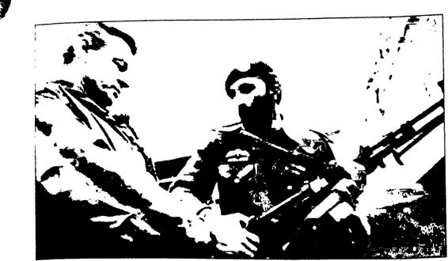
Brzezinski Amerikan silahlarım Usame Bin Ladin’e teslim ederken (1981)
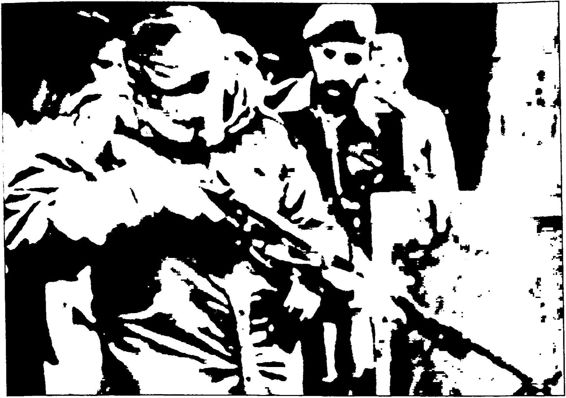
Brzezinski Amerikan silahlarının kullanımını Usame Bin Ladin’e gösterirken (1981)
ABD bu proje çerçevesinde Türkiye’de de dinci akımların yük selmesini istemiştir. 1945 yılında Türkiye, Sovyet yayılmasına karşı ABD’den yardım isteyince ABD, İsmet İnönü yönetimindeki Türkiye’ye, “Komünizm ve Sovyet yayılmasının en büyük düşmanı dindir. Atatürkçülüğü, ulusçuluğu, bilimgüder (laik) yönetim biçimini, devletçiliği bırakıp dingüder bir yönetime dönüşmezseniz, size yardım edemeyiz, ” demiştir. İnönü de bu doğrultuda bir “din açılımı” gerçekleştirmiştir. Atatürk’ten sonra, Atatürk’ün Dinde Öze Dönüş Projesi’nin unutulması, dinin dört, beş yıl ihmal edilmesi, ABD isteğiyle yapılan bu “din açılımının” kısa sürede “din istismarına”, “dinciliğe” evrilmesine yol açmıştır. Nitekim Mayıs 1948’de radikal İslamcı çizgideki Sebilürreşad dergisi yeniden yayımlanmaya başlanmıştır. Dergi ilk sayısında şöyle demiştir: “ Allah’ın inayetiyle Sebilürreşad'a başlıyoruz. Kapanalı tam 22 sene oldu (1926-1948). Dine karşı o günden başlayan baskı hareketi, zaman oldu ki en şiddetli dereceyi buldu. Bütün din müesseselerinin kapılarına zincirler vuruldu. Bütün mekteplerden din dersleri kaldırıldı. Bütün halkevlerine din kitapları girmesi yasaklandı. Din kitaplarından ayetler kaldırıldı. Laiklik nikahına bürünerek komünizmin temellerini kurmaya kalkıştı... Şimdi artık korku, meskenet kalplerden silindi. Bu ölümden sonra diriliştir. Milletin manevi varlığını hançerleyenler, artık Sebilürreşad bir daha dinlemez demişlerdi. Fakat Allah’ın inayetiyle dirildi işte... Milletlerin hayatında böyle dalalet, azgınlık, küfür ve ilhâd azgınlığı devirleri de olur (1926-1948). Artık (1948) korku yoktur. Bütün maneviyat düşmanlarının taarruzları kırılmış, millet din hürriyetine, vicdan hürriyetine kavuşmuştur. Elbette bu hürriyet nimetlerinden istifade edeceğiz! Kapılarına kilit vurulan din müesseselerimizi açacağız. Harıl harıl Kur’an okutacağız; hadis okutacağız, fıkıh okutacağız. Uzun seneler Allah’ın, Peygamber’in adı anılmayan mekteplere Millet Meclisi’nin arzusu ve hükümetin himayesiyle din dersleri konacak, çocuklarımız dinini diyanetini öğrenecek. Müslüman çocukların kalplerinden sökülmek istenen iman ve fazilet tahkim olunacak...”1948’de yeniden çıkmaya başlayan Sebilürreşad dergisi, görüldüğü gibi, Atatürk Cumhuriyeti’ni “dinsizimansızlıkla” suçlamakta ve bundan sonra dinliimanlı nesiller yetiştirmekten söz etmektedir.
Aslında Atatürk Cumhuriyeti’ni “dinsizimansız” gösterme planı, kökleri 1930’lara kadar giden dış merkezli bir plandır. Ortadoğu Uzmanı Alman Kurt Ziemke 1930’da yayımlanan Die Nene Turkei adlı kitabında şöyle demiştir: “İngilizler Musul'da hedeflerine ulaşmak için bir yandan Türkiye'deki ayrılıkçı hareketlere destek verirken, diğer yandan da Kemalist akımın yayılmasını engelleyecek önlemlere başvurmalıdırlar... Yapılması gereken Kemalist Cumhuriyetin hem din düşmanı hem de Kürt düşmanı olduğu temasını gündeme getirip işlemektir."ABD, 1945’ten sonra bir anlamda Kurt Ziemke’nin bu önerisini hayata geçirmiştir. Türkiye’deki ABD işbirlikçisi dinciler yazdıkları kitaplarda ve çıkardıkları dergilerde Atatürk’ü ve Atatürk Cumhuriyeti'ni “din düşmanlığıyla” suçlamışlardır.
ABD 1950’lerde Adnan Menderes’in DP’sini desteklemiş, DP de din merkezli bir siyaset izlemiştir. Saidi Nursî bu dönemde parlatılmıştır. 1945’ten itibaren ABD, Türkiye’deki İslamcıları her bakımdan desteklemiştir. Radikal İslamcılar da bu desteği karşılıksız bırakmamıştır. Örneğin 1969’da İstanbul’a gelen ABD 6. Filosu’nu “Tam bağımsız Türkiye” sloganlarıyla protesto eden Türk gençlerine radikal İslamcı Mehmet Şevket Eygi’nin Bugün gazetesinin kışkırtmalarıyla saldıran satırlı, sopalı İslamcı gençler 2 kişiyi öldürmüş, 200’den fazla kişiyi ise ağır yaralamıştır.
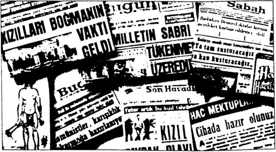
M. Şevki Eygi’nin Bugün gazetesinin kışkırtmaları 1950’lerden itibaren Türkiye’yi “dinci kuşatma” altına alan ABD, 1970’lerde “Konsantrik Dış Çizgi Politikası” doğrultusunda Türkiye’yi ve dünya Müslümanlarını Sovyetler Birliği ve Avrupa Ekonomik Topluluğu’ndan uzaklaştırarak Ortadoğu’da Sovyetler Birliği düşmanı “İslam Birliği” kurma hayaline yöneltmiştir. Bu doğrultuda Türkiye’de Necmettin Erbakan Milli Nizam Partisi’ni kurmuştur.
ABD’nin dinci “Yeşil Kuşak Projesi” Türkiye’de 12 Eylül 1980 Askeri Darbesi’nin ardından tam olarak hayata geçirilmiştir. Atatürkçülük kılıfına sokularak yapılan 12 Eylül 1980 Darbesi özünde gerçek Atatürkçülüğe (Kemalizme) karşı yapılmış Amerikancı bir darbedir. Darbenin amacı Türkiye Cumhuriyeti’ni Atatürkçü, laik çizgiden kopartıp ABD’nin 1945’ten beri uygulamaya çalıştığı Türk-İslam Sentezci çizgiye tam olarak oturtmaktır. Nitekim 12 Eylül yönetimi bir yandan taktik gereği Erbakan’ın MNP’sini yargılarken, diğer yandan MNP’nin savunduğu dinci politikaları bir bir hayata geçirmiştir. Cengiz Özakıncı’nın ifadesiyle: “Bir yandan Erbakan’ı, ‘Niçin İslam Ortak Pazarı istiyorsunuz? Niçin okullarda zorunlu din dersi istiyorsunuz? Niçin yasaların din kurallarına uydurulmasını istiyorsunuz; bütün bunlar 163. maddeye aykırıdır" diye yargılayan 12 Eylül yönetimi öte yandan kendi elleriyle okullara zorunlu din dersleri koyuyor. Başbakan Bülent Ulusu’yu İslam Konferansına gönderiyor, orda Türkiye öncülüğünde bir İslam Ortak Pazarı kurulmasını savunuyor ve Türkiye’de yasaların şeriata uydurulacağına ilişkin bir anlaşma imzalıyordu.”
12 Eylül, Türk solunu tamamen yok ederken, dincisağın olabildiğince önünü açmıştır. 1950’lerde kesintiye uğramış olsa da, az çok devam eden laik eğitim sistemine darbe vurmuştur. İmamhatip okullarının sayısının ölçüsüzce artırılması, cemaatlerin, tarikatların önünün açılması gibi uygulamalar hep 12 Eylül’ün eseridir.
12 Eylül’ün askeri lideri Kenan Evren, sivil lideri ise Turgut Özal’dır. Özal, ABD’nin Yeşil Kuşak Projesi’ni Türkiye’de uygulayacak adam olarak seçilmiştir. Darbenin paşası Kenan Evren, Atatürkçü görünmeye çalışmıştır, ancak darbenin Başbakanı Özal, Atatürkçü görünümü de bırakarak Anayasa’dan Atatürkçülüğü çıkartıp ülkeyi ABD’nin istediği İslamcı yönetime ve İslam Birliği’ne götürmeye uğraşmıştır. Aydınlar Ocağı’nın Türk-İslamcılarından olan Özal, Mart 1984 seçimlerini kazanınca Türkiye’de “Kürtçülük” ve “İslamcılık” basında en sık kullanılan sözcükler olmuştur. Özal döneminde Atatürk Cumhuriyeti’ni eleştirip İslam Devleti’ni savunan yayınlarda, kurumlarda, kişilerde gerçek anlamda bir patlama olmuştur. Öyle ki, 1999’a gelindiğinde Türkiye’de laik demokratik Cumhuriyet düzenine karşı din devleri propagandası yapan 5854 eğitim kurumu, 124 radyo, 41 televizyon, 5200 yerel gazete ve dergi, 4500 vakıf, 40 vali, 89 vali yar dımcısı ve 300 kaymakam ve devler yönetiminde görevli kişilerin bü yük bir bölümü Amerikan etkisindeki siyasal İslamcılık için mücadele etmektedir. Özal döneminde “siyasal İslamcılık” ile “etnik bölücülük” Amerikan güdümünde el ele büyütülmüştür. Nitekim silahlı bölücü örgüt PKK ile siyasal İslamcı örgüt İBDAC, 1984 Ağustosu’nda, on beş gün arayla silaha sarılmışlardır. Bu bir tesadüf olmasa gerekir. Daha 1990’larda siyasal İslamcılık ile etnik ayrımcılık birlikte dinsel temele dayanan bir federasyondan söz etmeye başlamışlardır. O zamanki Refah Partisi (RP) İstanbul İl Başkanı R. Tayyip Erdoğan, Mehmet Metinere bir “Kürt Sorunu Raporu” hazırlatmış, 1990 yılında RP, Merkez Karar Yürütme Organı toplantısını Peşmerge kamplarında yapmış, RP Genel Başkanı Necmettin Erbakan 1993’te, Kürtçe yayın yapan televizyon kurma sözü vermiş ve RP 23 Nisan 1996’da “Eyalet Sistemi” istediğini açıklamıştır. Bu istekten üç ay sonra da RP’li milletvekilleri, “Kuzey Irak’ta Kürt Devleti İstiyoruzdiye açıklama yapmışlardır.
1990’ların başında ABD, CIA eski Türkiye İstasyon Şefi Paul Henze gibi görevlileriyle Türkiye’de Nurculuk ve Nakşibendilik gibi cemaatlerin güçlenmesine çalışmıştır.
Türkiye’nin ABD eliyle din devletine ve federasyona doğru sürüklendiği 1990 yılında bu sürece engel olacağı düşünülen ulusalcı Atatürkçü aydınlar öldürülmeye başlanmıştır. ABD politikalarının Türkiye’deki baş aktörü Turgut Özal’ın Türk Ceza Yasası’nın din devleti kurulmasına engel 163. maddesini kaldırmak istemesine tepki gösteren aydınlardan Muammer Aksoy 31 Ocak 1990’da öldürülmüştür. Ardından 7 Mart 1990’da Çetin Emeç, 4 Eylül 1990’da Turan Dursun ve 4 Ekim 1990’da Bahriye Üçok öldürülmüşlerdir. Özal’ın Ocak 1993’te imamhatip okullarını bitirenlerin de Harp Okulu’na girmelerine engel olan yasayı değiştirmesini 22 Ocak 1993’te Cumhuriyet gazetesindeki köşesinde “İmam Subay” başlığıyla eleştiren Uğur Mumcu da bu yazısından sadece iki gün sonra öldürülmüştür. Cumhuriyet gazetesindeki köşesinde “Asker, Polis ve Naziler” başlıklı bir yazıyla laiklikten verilen tavizleri eleştiren Ahmet Taner Kışlalı da tıpkı Uğur Mumcu gibi bu yazısından sadece iki gün sonra, 22 Ekim 1999’da öldürülmüştür.
Çetin Emeç
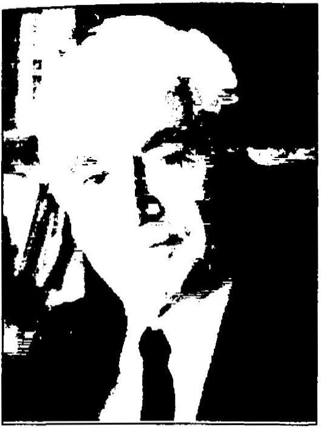
Muammer Aksoy
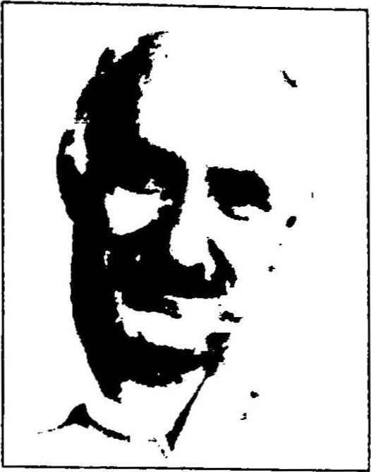
Turan Dursun
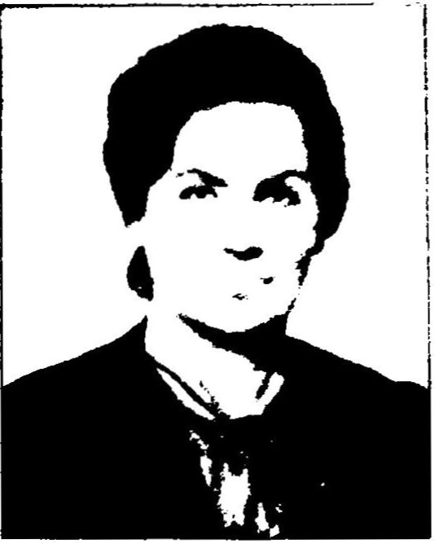
Bahriye Üçok
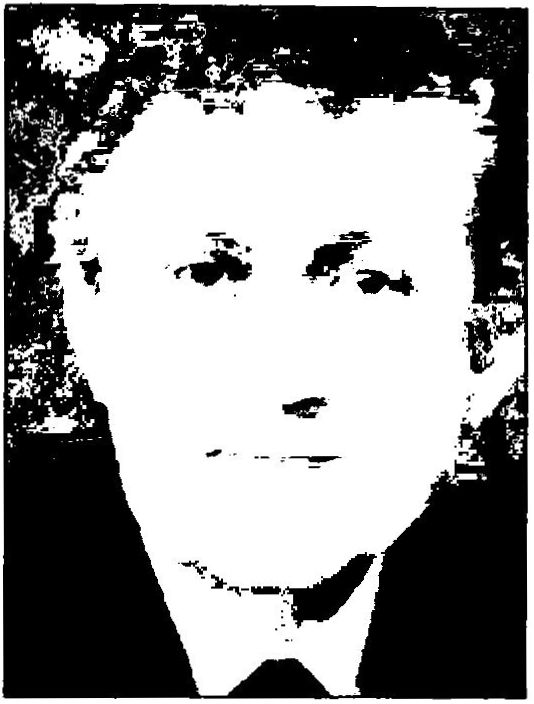
A. Taner Kışlalı
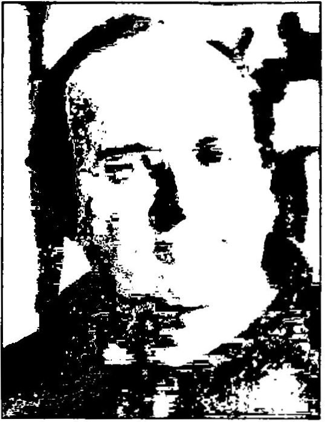
Uğur Mumcu
1990’ların başında Türkiye’de bir taraftan Atatürkçü aydınlar bir bir öldürülürken diğer taraftan İngiltere kaynaklı “hilafet devleti” tartışmaları başlamıştır. 1 Kasım 1993’te ABD vatandaşı olduğu bilinen Tansu Çiller’in başbakanlığı döneminde toplanan “Din Şûrası”nda, Türkiye’de kısa zamanda bir hilafet devleti kurulmasını sağlayacak bazı kararlar alınmıştır. Hilafet Devleti Projesi’nin sahibi aslında Amerika’dır. ABD, o günlerde İslamcı çizgideki Genelkurmay Başkanı Doğan Güreş Paşa’nın görev süresi dolmadan İslamcı bir darbeyle Erbakan’ın RP’sini iktidara getirip hilafet devletini hayata geçirmeyi amaçlamaktadır. Aynı günlerde Erbakan’ın, “Kanlı mı olacak kansız mı?” “Rap rap sesleriyle geliyoruz.” derken, söz ettiği aslında bu Amerikancı darbe planıdır. O günlerde yapılması planlanan darbenin tıpkı 12 Eylül gibi “Atatürkçü” görünümlü olacağına ilişkin işaretler de vardır. Örneğin RP Genel Başkanı Erbakan, “Atatürk yaşasaydı RF'li olurdu!" demiş, Erbakan'ın bu demeci basında ciddiye alınıp eni ne boyuna tartışılmıştır. Görünen o ki, Türkiye’yi din devleti haline getirmek isteyenler, bunu hayata geçirirken bile Atatürk’ü kullanmaktan çekinmemişlerdir. Hilafet Devleti Projesi'nin gündemde olduğu 1989-1995 yıları arasında Türkiye'de gazetelerde laiklik karşıtı düşünceler ileri süren bazı hocalar Polis Akademilerinde ders vermeye başlamışlardır. RP Genel Başkanı Erbakan’ın “yalancıktan” Atatürkçü görünmeye çalıştığı o günlerde, bazı RP'li milletvekilleri ve belediye başkanları ise duygularına engel olamayarak açıkça laiklik ve Atatürk karşıtı demeçler vermekten kendilerini alamamışlardır. Örneğin RP’li Kayseri Belediye Başkanı Şükrü Karatepe, 10 Kasım 1996 tarihinde Atatürk’ü anma töreninde şunları söylemiştir: “Müslümanlar, inananlar! Bu rejime karşı hırsınızı, kininizi, nefretinizi içinizden eksik etmeyin! (...) Laik değilim. Tek başıma da kalsam bu zulüm rejimi değişmeli diyeceğim. Müslümanlar hırsınızı, kininizi, nefretinizi içinizden eksik etmeyin. Bu bizim boynumuzun borcudur. TC dikta cumhuriyetidir. ” O günlerde aynı şekilde RP’li Hasan Hüseyin Ceylan ile Şevki Yılmaz’ın nasıl açıkça Atatürk ve Cumhuriyet düşmanlığı yaptığı hâlâ hafızalar da tazeliğini korumaktadır.
Genelkurmay Başkanı Doğan Güreş emekliye ayrıldıktan sonra onun yerine geçen Org. İsmail Hakkı Karadayı, Amerikancı siyasal İslamcılığın önünü kesmek için bazı adımlar atmıştır. Örneğin 15 Şubat 1996’da Jandarma Genel Komutanlığı “Kışlalarda İbadet Genelgesi” yayımlayarak orduda din istismarına engel olmak istemiştir. Ancak Amerikancı siyasal İslamcılık faaliyetleri devam etmiştir ve bunun üzerine 28 Şubat 1997 tarihli MGK toplantısında siyasal İslamcılık ve etnik bölücülüğü “baş düşman” ilan eden bir açıklama yapılmıştır.
Ancak maalesef Amerikan güdümündeki siyasal İslam’ın ve etnik bölücülüğün önünü kesmek mümkün olmamıştır. Din devleti (hilafet devleti) ve federasyon amaçlayan siyasal İslamcı hareketlerle, etnik bölücü hareketler 2000 sonrasında Türk siyasetinde yaşanan depremler sonrasında kurulan AKP ve BDP ile yoluna devam etmiştir. ABD bu dönemde BOP çerçevesinde geliştirdiği “Yeni Osmanlıcılık Projesi”ni hayata geçirmek istemiştir. O günlerde AKP Genel Başkanı R. Tayyip Erdoğan BOP’un “eş başkanı” olduğunu bizzat itiraf etmiştir.
Bugün, 2013 yılında “laik” ve “üniter” Türkiye Cumhuriyeti bu iki parti eliyle, büyük bir hızla, bir taraftan “din/hilafet devletine”, diğer taraftan “federasyona” doğru sürüklenmektedir. Özetlemek gerekirse, Türkiye Cumhuriyeti, 1945’ten 2013’e kadar zaman zaman artan, zaman zaman azalan ama kesintisiz devam eden bir şekilde Atatürkçü, yani tam bağımsızlıkçı ve laik çizgiden tam bağımlı ve dinci çizgiye doğru sürüklenmiştir. Türkiye’nin 1945 sonrası tarihi biraz da bu acı sürüklenişin tarihidir. Bu süreçte neredeyse bütün dincisağ iktidarlar ve onların güdümlü aydınları, hocaları, yazarları Atatürk’e ve onun kurduğu Türkiye Cumhuriyeti’ne karşı söylemler ve tarih tezleri geliştirmiştir. 1945-2013 arasında Atatürk ve Cumhuriyet, ABD ve onun yerli işbirlikçilerince sürekli kötülenmiştir. Özellikle 2000’lerde gündeme gelen “Yeni Osmanlıcılık” çerçevesinde Türkiye Cumhuriyeti ve o Cumhuriyet’in kurucusu Atatürk, olabildiğince eleştirilmeye, karalanmaya hatta yok edilmeye çalışılmıştır. Çünkü dış ve iç odaklar, Türkiye Cumhuriyeti ve o Cumhuriyet’in kurucu aklı Atatürk’ü kötülemeden, karalamadan, halkın gözünden düşürmeden bu ülkeyi ne din devletine ne de federasyona dönüştüremeyeceklerini çok iyi anlamışlardır.
Atatürk ve Atatürk Cumhuriyeti konusundaki alternatif tarih tezlerini okumadan önce Türkiye’nin Atatürk’ten sonra, 1945-2013 arasındaki gerçek siyasi tarihini çok iyi okumak gerekir. Çünkü Atatürk ve Cumhuriyet düşmanlığı üzerine oturtulmuş bu “alternatif tarih tezleri” 1945’ten sonra Türkiye için geliştirilen okyanus ötesi bir siyasi projenin 1950’de hayata geçirilen en önemli ayaklarından biridir.
Emperyalizmin Atatürk düşmanlığı aslında Cumhuriyetimizden de eskidir. Kurtuluş Savaşı’nda emperyalizme ve yerli işbirlikçilerine “Ya istiklal ya ölüm” parolasıyla başkaldıran Atatürk’e ilk düşmanlık besleyenler İngilizler ve onların yerli işbirlikçileridir. İngilizler, Kurtuluş Savaşı sırasında Atatürk’ü ortadan kaldırmak için birçok yol denemiştir. Bu yollar, I. TBMM’de Atatürk’ün silah arkadaşlarından bazılarını (Kâzım Karabekir gibi) satın almaya çalışıp Atatürk’e karşı Meclis içinde bir darbe yaptırma planından tutun da, Müslüman din adamı kılığına sokulmuş İngiliz ajanlarına Atatürk’ü öldürtme planına kadar uzanmıştır. Çok sayıda İngiliz ajanı ve casusu Anadolu’da Atatürk'ü öldürmek için fırsat kollamıştır. Bunlar arasında Sivas Kongresi'ni basıp Atatürk'ü ortadan kaldırmakla görevlendirilen İngiliz Binbaşısı casus Covbertin Noel ve Hint Müslümanı kılığında Ankara'ya gidip Atatürk’ü öldürmeye kalkan Mustafa Sagir ilk akla gelenlerdir. Ayrıca İngiliz gizli servisi MI6 Atatürk’ü adım adım izle miştir. Atatürk, İngiliz emperyalizminin ve taşeronlarının kendisine kurduğu tuzakların farkında olduğundan Cumhuriyet döneminde hiç yurtdışına çıkmamıştır.
Kurtuluş Savaşı yıllarında İngiliz emperyalizmi kadar onun yerli iş birlikçileri; Damat Ferit ve Padişah Vahdettin de bir an önce Atatürk’ün ortadan kaldırılması için çaba harcamıştır. Örneğin Vahdettin’in onayıyla Damat Ferit hükümeti, Atatürk hakkında “idam fermanı” yayımlamış, yetmemiş, Atatürk’ü halkın gözünden düşürmek için onun “dinsiz ve zındık” olduğunu belirten “ihanet fetvaları” hazırlatmış, dahası Atatürk’ün “Hükümetin ve padişahın sözünü dinlemeyen başı bozuk bir eşkıya, bir çete lideri, hatta Bolşevik” olduğu yalanlarını yaymıştır. Damat Ferit hükümetini destekleyen hain mütareke basını da Ali Kemal, Refi Cevad gibi yandaş kalemlerle Atatürk’e saldırmıştır.
İngiliz emperyalizminin “Atatürk düşmanlığı” Kurtuluş Savaşı’ndan sonra da devam etmiştir. İngiliz istihbaratı bu amaçla Atatürk’ü kötüleyen propaganda kitapları, yazıları hazırlatmıştır. Örneğin H. C. Armstrong adlı bir İngiliz istihbarat görevlisi Atatürk’e ağır hakaret ler içeren Bozkurt adlı bir kitap yazıp yayımlamıştır. Hükümet haklı olarak bu kitabın Türkiye’de basılıp yayımlanmasını yasaklamış, ancak Atatürk, kendisini ağır şekilde eleştiren, hatta iftiralarla, uydurmalarla, yalanlarla karalayan bu kitabın Türkiye’de basılıp yayımlanmasında bir sakınca görmemiştir. Çünkü o, milleti için yapıp ettiği hizmetlerin bu tür kötü propaganda yayınlarıyla gölgelenemeyeceğini düşünmüştür.
Emperyalizm Atatürk’ten hep korkmuş, bu nedenle gizli açık ona yönelik düşmanlığı sürdürmüştür. Örneğin, 1930’da Ortadoğu Uzmanı Alman Kurt Ziemke, Die Nene Turkei adlı kitabında Kemalizmin yayılmasını önlemeyi, bunun için de Kemalist Cumhuriyet’in hem “din düşmanı” hem “Kürt düşmanı” olduğu temasının işlenmesini önermiştir.
1945’ten sonraki soğuk savaş döneminde, bilindiği gibi İngiliz emperyalizminin yerini Amerikan emperyalizmi almıştır. Bu nedenle 1945’ten itibaren Amerikan ajanları, casusları, gizli servis elemanları ve onların yerli işbirlikçileri “Atatürk düşmanlığına” başlamıştır. Yani bir anlamda bayrak el değiştirmiştir.
1950’lerden itibaren ABD emperyalizminin taşeronluğunu yapan karşı devrimciler, Atatürk ve Cumhuriyet düşmanlığıyla tarihi gerçekleri eğip bükerek kelimenin tam anlamıyla “yalan tarih” yazmışlar, üstelik bunu yaparken hiç utanıp sıkılmadan yazdıkları kitaplara Yalan Söyleyen Tarih Utansın gibi adlar vermişlerdir.
SSCB’nin yıkılıp iki kutuplu dünyanın tek kutuplu dünyaya dönüştüğü 1990’ların başında ABD, Ortadoğu’yu yeniden şekillendirmeye yönelik BOP’u hayata geçirmek için Türkiye ile stratejik ortaklığı güçlendirmeye başlamıştır. 1993’ten itibaren BOP’a uygun yeni bir Türkiye yaratmayı amaçlayan Amerika, önce hilafet devleti, sonra “Yeni Osmanlıcılık” tartışmalarını başlatmıştır. Amerika Türkiye’yi yeniden Osmanlılaşmaya teşvik ederken, öncelikle Osmanlı’nın yıkılmasından sonra kurulan Türkiye Cumhuriyeti’ni ve Türkiye Cumhuriyeti’nin kurucusu Atatürk’ü eleştirmeye başlamıştır.
1996 yılında CIA görevlisi ve CFR üyesi Samuel Huntington, “Türkiye İslam’ın lideri olmalı! Bunun için de Türkiye Atatürk'ün mirasını reddetmeli diye demeçler vermiştir. Huntington Medeniyetler Çatışması adlı kitabında da bir taraftan Türkiye’yi İslam’ın lideri olmaya teşvik ederken, diğer taraftan Çağdaş ve Laik Cumhuriyet Projesi’ni ve bu projenin mimarı Atatürk’ü olabildiğince eleştirmiştir.
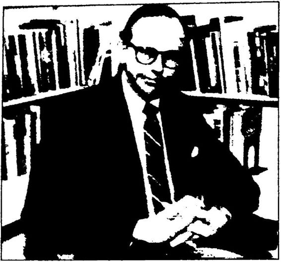
Samuel Huntington
Huntington, medeniyetler içinde İslam medeniyetinin başsız olduğunu belirtip, Türkiye’nin “İslam’ın başı” olamamasının nedenini Atatürk’e bağlamıştır.
Huntington şöyle demiştir:
“Mustafa Kemal Atatürk, 1920’li ve 1930’lu yıllarda gerçekleştirdiği bir dizi dikkatlice hesaplanmış devrim yoluyla halkını Osmanlı ve Müslüman geçmişinden uzaklaştırma girişiminde bulundu. Kemalizmin temel ilkeleri ya da ‘altı ok’ halkçılık, cumhuriyetçilik, milliyetçilik, laiklik, devletçilik ve devrimcilikti. Çokuluslu bir imparatorluk fikrini reddeden Kemal, homojen bir ulus devlet meydana getirmeyi amaçlamış, bu süreçte Ermeniler ve Yunanlılar ülkeden zorla kovulmuş ve öldürülmüştü. Daha sonra sultanı tahttan indirdi ve Batılı tipte cumhuriyetçi bir siyasal rejim kurdu. Dinsel otoritenin asli kaynağı olan halifeliği kaldırdı. Geleneksel eğitime ve din işleri bakanlıklarına son verdi. Bağımsız din okullarını kapattı. İslam hukukunu uygulayan dinsel mahkemeleri lağvetti. Onun yerine İsviçre Medeni Yasası’na dayanan yeni bir hukuk sistemi kurdu. Ayrıca geleneksel takvimin yerine Gregoryen takvimi geçirdi ve İslam’ın devlet dini olmasına resmen son verdi. Büyük Petro’ya öykünerek dinsel gelenekçiliğin bir simgesi olduğu gerekçesiyle fesi yasakladı, halkı şapka giymesi için teşvik etti ve Türkçenin Arap harfleriyle değil Latin harfleriyle yazılmasını kararlaştırdı. Bu son reformun büyük bir önemi vardı: Bu reform, Latin harfleriyle okuma yazma öğrenen yeni kuşakların engin bir geleneksel literatüre erişmesini imkânsızlaştırdı. Avrupa dillerinin öğrenilmesini teşvik etti ve okuryazarlık oranını artırma sorununu büyük ölçüde kolaylaştırdı. Türk halkının ulusal, siyasal, dinsel ve kültürel kimliğini yeniden tanımlayan Kemal, 1930’lu yıllarda enerjik bir şekilde Türkiye'nin ekonomik gelişmesini sağlamaya girişti. Batılılaşma hem modernleşmeyle el ele yürüdü hem de modernleşmenin vasıtası oldu...”
Görüldüğü gibi medeniyetleri çatıştırmaya kararlı olan Huntington’un kaleminden dökülen bu cümleler, sanki bizim Atatürk ve Cumhuriyet düşmanı kadim yobazlarımızın, dönme liberallerimizin kaleminden dökülmüş gibidir! Huntington’un talebi şudur: Türkiye Atatürkçülükten vazgeçsin. Batı’nın karşısındaki yeri belli olsun. Huntington’a göre Kemalizm medeniyet ithaliyle Türkiye’yi Avrupalı yapmaya kalkan bir projedir, ancak başarısız olmuştur! Çünkü ne kadar uğraşılırsa uğraşılsın Türkiye Batılı olamamıştır! Burada şu görüşü savunmuştur: “Batılı olmayan toplumlar modernleşmek istiyorlarsa bunu Batıklar gibi değil, Japonya gibi kendi yöntemleriyle, kendi gelenek, kurum ve değerlerini kullanarak ve geliştirerek başarmak zorundadırlar.” Görülen o ki Huntington, Japon medeniyetinden de bir şey anlamış değildir! Huntington’a göre Türkiye ne Ortadoğulu ne de Batılı olan, iki arada bir derede kalıp, tanımsız ve kimliksiz bir ülke haline gelmiştir! Burada Huntington’u üzen Türkiye’nin bu durumu değildir kuşkusuz, burada onu üzen Türkiye’nin nerede durduğunun belli olmamasının Batı’ya sorun yaratmasıdır. Huntington’a göre Atatürk, çok sıkı laiklik tanımıyla Türkiye’nin, Osmanlı Devleti’nin İslamcı rolünü devam ettirmesini engellemiştir. Ona göre Türkiye kendini laik ülke olarak tanımladığı sürece İslam medeniyetinin önderi olamaz. Bu nedenle Türkiye’nin bir an önce Atatürk’ten ve Atatürk’ün laiklik tanımından kurtulması gerekir. Huntington’ın ifadesiyle, “Türkiye Atatürk’ün mirasını bilinçli bir şekilde reddedip kendisini İslam’ın bir lideri olarak yeniden tanımlamaya kalkışmadığı sürece...” sorunlarını çözemeyecektir!
Huntington’u dinleyelim:
“Türkiye İslam’ın çekirdek devleti olmak için gerekli tarihe, nüfusa, orta düzey bir ekonomik gelişmişliğe, ulusal birliğe, askeri yetenek ve geleneğe sahiptir. Gelgelelim Atatürk’ün Türkiye’yi net bir şekil de laik bir toplum olarak tanımlaması, Türk Cumhuriyeti’nin bu rolü Osmanlı İmparatorluğu'ndan devralmasını önlemiştir. Türkiye anayasadaki laiklik ilkesine bağlılığından ötürü OlC'nin kurucu üyesi bile olamamıştır. Türkiye kendisini laik bir ülke olarak tanımladığı sürece İslam'ın liderliğine soyunma olasılığı yoktur.
Bununla birlikte Türkiye kendisini yeniden tanımladığı takdir de ne olur? Türkiye bir noktada Batı dünyasına üyelik için yalvarıp duran bir dilenci olarak oynadığı hüsran verici ve aşağılayıcı rolden vazgeçip. Batının temel İslâmî muhatabı ve düşmanı olarak oynadığı çok daha etkileyici ve onurlu tarihsel rolü yeniden üstlenmeye hazır hale gelebilir. Köktendincilik Türkiye'de tırmanışa geçmiştir. Özal yönetimi altında Türkiye Arap dünyasıyla özdeşlik kurmak için büyük çaba harcamıştır. Orta Asya'da ılımlı bir rol üstlenebilmek için etnik ve dinsel bağlantılarından faydalanmaya çalıştı. Boşnak Müslümanları desteklemiş ve cesaretlendirmiştir. Balkanlar, Ortadoğu, Kuzey Afrika ve Orta Asya'daki Müslümanlarla kapsamlı tarihsel bağlantılara sahip olması bakımından Türkiye'nin Müslüman ülkeler arasında benzersiz bir yeri vardır. Türkiye'nin sonuçta bir ‘Güney Afrika’ rolü kotarması hiç de mantık dışı değildir. Güney Afrika'nın ırk ayrımcılığını ilga etmesi gibi, kendine yabancı olduğu gerekçesiyle laikliği kaldırıp, kendi medeniyet kümesinde bir parya konumundan çıkarak bu medeniyetin lideri haline gelebilir. Güney Afrika, Hıristiyanlıkta Batı’nın iyi ve kötü yanlarını ve ırk ayrımcılığını yaşayıp gördükten sonra, Afrika'ya liderlik etme vasfını özellikle kazandı. Laiklik ve demokraside Batı’nın iyi ve kötü yanlarını yaşayıp görmüş olan Türkiye de en az onun kadar İslam’a liderlik etme vasfını kazanmış olabilir. Ama bunu yapabilmek için Atatürk’ün mirasını, Rusya’nın Lenin’in mirasını reddedişinden daha eksiksiz bir şekilde reddetmek zorunda kalacaktır. Böyle bir hamle aynı zamanda Atatürk kalibresinde bir lideri, Türkiye'yi bölünmüş bir ülke olmaktan çıkarıp çekirdek bir devlet haline getirmek için gerekli siyasal ve dinsel meşruluğu kendisinde toplamış olan bir lideri gerektirir."
Görüldüğü gibi CIA görevlisi ve CFR üyesi Samuel Huntington, ABD çıkarları doğrultusunda “dünya düzeninin yeniden kurulması” amacıyla kaleme aldığı Medeniyetler Çatışması adlı kitabında açıkça Türkiye’nin Atatürk’ün mirasını reddetmesini, laiklikten vazgeçmesini ve yeniden Osmanlı’nın “İslamcı” kimliğine dört elle sarılmasını önermiş ve bu değişimi gerçekleştirecek bir Türkiye’nin İslam dünyasının lideri olacağını belirtmiştir. Huntington, Atatürkçü çizgide laik, çağdaş ve demokratik bir Türkiye’nin ABD çıkarlarına aykırı, yeniden Osmanlıcı-İslamcı köklerine sarılmış bir Türkiye’nin ise ABD çıkarlarına uygun bir Türkiye olacağının farkındadır. Çünkü ABD, medeniyetler çatışması kuramında “ötekileştirilmiş ülkelere” ihtiyaç duymaktadır, ancak laiklik, çağdaşlık, demokrasi gibi Batı’nın değerlerine (aslında evrensel değerlere) sahip Atatürkçü bir Türkiye “ötekileştirilmiş bir ülke” olmayacağından, ABD’nin medeniyetler çatışması kuramında işe yaramayacaktır. Oysaki, yeniden Osmanlı’nın İslamcı köklerine yönelmiş bir Türkiye, “ötekileştirilmiş ülke” olarak medeniyetler çatışmasında, İslamcı Osmanlı kimliğiyle ABD’nin fazlasıyla işine yarayacaktır. Huntington’un şu cümlesi bu gerçeğin en açık ifadesidir: “Tür kiye bir noktada Batı dünyasına üyelik için yalvarıp duran bir dilenci olarak oynadığı hüsran verici ve aşağılayıcı rolden vazgeçip, Batı’nın temel İslami muhatabı ve düşmanı olarak oynadığı çok daha etkileyici ve onurlu tarihsel rolü yeniden üstlenmeye hazır hale gelebilir. ” Görüldüğü gibi Huntington, Türkiye’nin “Batı’nın temel İslami muhatabı ve düşmanı olarak” kalmasını “etkileyici ve onurlu tarihsel rol” olarak görmekte, bunun için de Türkiye’yi ısrarla yeniden Osmanlıcı ve İslamcı olmaya çağırmaktadır.
CIA görevlisi ve CFR üyesi Samuel Huntington’un Türkiye’nin İslami çizgiye kaymasını, İslam dünyasının lideri olmasını istemesinin nedeni, Türkiye’yi ya da İslam’ı çok sevmesi değildir kuşkusuz, Huntigton’un tek düşündüğü şey ABD’nin yüksek çıkarlarıdır ve bu çıkarlar, 1946’dan beri olduğu gibi 1996’dan sonra da Türkiye’nin, Batı medeniyetinin temellerindeki “akıl” artı “bilim” artı “laiklik” eşittir “çağdaşlaşma” formülünden bir an önce uzaklaştırılmasını gerektirmektedir. ABD, Ortadoğu’daki çıkarları açısından çağdaş, laik, bilim üreten bir Türkiye yerine “İslamcı” ve “savaşçı” bir Türkiye’den yanadır. Nitekim bugün (2013) ABD’nin egemenlik kurduğu İslam dünyasının neredeyse tamamı, aklı ve bilimi ikinci plana atmış, radikal İslamcılıkla ve radikal İslamcı gruplarla çepeçevre kuşatılmıştır. ABD, Türkiye’nin de benzer bir “dinci kuşatmayla” kuşatılmasını istemektedir. Ancak radikal İslamcılığın zamanla bölgesel çıkarlarına zarar verdiğini gören ABD, Türkiye’de “ılımlı İslam’ın” gelişmesini amaçlamıştır. Türkiye’de bu “dinci kuşatmanın” önündeki en büyük engel ise Atatürk ve gerçek İslam’dır.
Huntington'un Türkiye’de Atatürk’ün mirasını reddedebilmek için en az Atatürk ayarında bir lidere ihtiyaç olduğunu belirtmesi de dikkat çekicidir: Huntington'un ifadesiyle, Böyle bir hamle aynı zamanda Atatürk kalibresinde bir lideri, Türkiye'yi bölünmüş bir ülke olmaktan çıkarıp çekirdek bir devlet haline getirmek için gerekli siyasal ve dinsel meşruluğu kendisinde toplamış olan bir lideri gerektirir. ”Burada söz edilen liderin “siyasal ve dinsel meşruluğu kendisine toplamış olan bir lider" olarak tanımlaması da anlamlıdır. Bilindiği gibi Atatürk, laiklik ilkesiyle her şeyden önce siyasal ve dinsel meşruluğu birbirinden ayırmış, bu amaçla saltanatı ve halifeliği birbirinden ayırıp sırasıyla kaldırmıştır. Görülen o ki CIA görevlisi Huntington, Türkiye’ye siyasal ve dinsel meşruluğu yeniden bir araya toplayan Osmanlı’nın sultan/halifesi gibi bir lider önermektedir. Bu lider, AKP Genel Başkanı Başbakan R. Tavyip Erdoğan olabilir mi? BOP’un “eş başkanı” Erdoğan’ın hem sıkça yeniden Osmanlılaşmaktan söz etmesi, hem laiklikten rahatsız olması, hem İslamcı bir dil kullanması, hem de niteliği belirsiz bir Başkanlık Sistemi’ni gündeme getirmesi, Huntington’un işaret ettiği Türkiye’yi Atatürk mirasından vazgeçirecek o liderin R. Tayyip Erdoğan olabileceğine yönelik şüpheleri artırmaktadır doğrusu! Huntington’un Medeniyetler Çatışması adlı kitabında sözünü ettiği “Atatürk’ün mirasını reddedecek” o liderin R. Tayyip Erdoğan olabileceğine yönelik güçlü işaretler vardır, ancak Huntington’un o liderde aradığı en önemli özellik, “Atatürk kalibresinde” olmak, Atatürk’ten sonraki bütün liderler gibi Erdoğan’da da yoktur.
Bu arada 2003’te Irak’a “demokrasi” götürmeye kalkan ABD, ne hikmetse 1996’da Türkiye’ye sultanlık/halifelik götürmeye kalkmıştır!
1996 yılında Huntington, Medeniyetler Çatışması adlı kitabında “Türkiye Atatürk’ün mirasını reddetmelidir,” dedikten bir yıl sonra başka CIA görevlileri de benzer düşünceler ileri sürmüştür. Örneğin 1997 yılında CIA ajanı Paul Henze, “Atatürkçülük öldü; Nakşiler, Nurcular ilericidir!” demiş, 1998 yılında CIA’in eski Ortadoğu Masası Şefi Graham Fuller ise, “Kemalizme son; Osmanlı’yla övünün, Fethullahçı olun!” diye demeçler vermiştir. Yine Hollandalı Arie Oostlander’in hazırladığı AB raporuna göre Türkiye AB’ye gerçekten girmek istiyorsa Kemalizmden vazgeçmelidir!
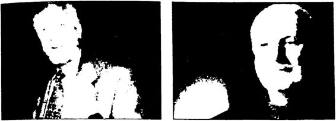
Paul Hertze Graham Fuller
CIA görevlilerinin ve ajanlarının açıklamaları, AB raportörlerinin beyanları, emperyalist Batı’nın ısrarla Türkiye’den “Atatürk’ün mirasını reddetmesini” istediğini gözler önüne sermektedir. ABD ve AB, Atatürk mirasından; yani laiklikten, cumhuriyetçilikten, milliyetçilikten, halkçılıktan, devletçilikten, devrimcilikten; yani “çağdaşlıktan” ve “tam bağımsızlıktan” rahatsızdır. Atatürk’ün Bağımsızlık ve Aydınlanma Savaşı’ndan rahatsızdır.
1946’dan beri neredeyse aralıksız olarak Atatürk mirasını yok etmek için Türkiye’yi Atatürk mirasına karşı güdümlü iktidarların kontrolünde tutan ABD, 1993’ten beri Türkiye’de Atatürk mirasının son kalıntılarını da tamamen temizlemenin hesaplarını yapmıştır.
Bilindiği gibi Atatürk, “Benim manevi mirasım akıl ve bilimdir, ” demiştir. ABD Türkiye’ye, “Atatürk’ün mirasını reddedin,” derken aslında “aklı ve bilimi reddedin” demek istemiştir. Çünkü ABD, hatta bütün Batı, aklı ve bilimi temel alan; düşünen, sorgulayan, üreten, bağımsızlığından asla taviz vermeyen, ulusal egemenliğin/demokrasinin tam anlamıyla işlediği Atatürkçü çizgideki bir Türkiye değil; aklı ve bilimi ihmal eden, dinle kandırılmış, düşünmeyen, sorgulamayan, üretmeyen, bağımsızlığa önem vermeyen, güdümlü bir başkanın/halifenin egemenliğinde yeniden Osmanlılaşmış, daha doğrusu “Osmanlıcılık” oynayan bir Türkiye arzulamaktadır.
Aslında emperyalist Batı, sadece Atatürk mirasından değil, gerçek İslami mirastan da çok rahatsızdır. Prof. Yaşar Nuri Öztürk’iin dediği gibi, “Batı, yani AB ve ABD Türkiye’de iki mirası çökertmek istiyor. Biri, özgün İslam mirası, öteki de özgün Atatürk mirası. Hurafe İslâmı, Arap İslâmı, Emevi İslâmı, Batının alkışladığı şeyler. Onlardan hiç bir rahatsızlığı yok. Zaten o sahte ve sözde İslam’ların temsilcileriyle işbirliği yaparak İslam dünyasını mahvediyor. Mesela İslam'ı, 'zulüm ve emperyalizm düşmanı bir din' olarak algılayanlara asla yanaşmıyor. Batı o İslam'dan çok rahatsız. Ondan korkuyor...”
Sonuç olarak ABD kendi çıkarlarına uygun bir Türkiye yaratmak için 1949'dan beri ABD'li uzmanların şekillendirdiği “Milli Eğitim’in tornasından geçmiş, Atatürk mirasına ve gerçek İslam’a karşı, İslamcı/dinci ve Osmanlıcı siyasetçilerden, devlet adamlarından ve aydınlardan yararlanmıştır, yararlanmaktadır.
Atatürk'ün en önemli özelliklerinden biri emperyalizmin en güçlü silahlarından birinin “kültür" olduğunu çok erken kavramış olmasıdır. 1920'lerde emperyalist Batı’ya Kurtuluş Savaşı’yla askeri ve siyasi olarak başkaldırıp zafer kazanan Atatürk, 1930’larda emperyalist Batı’ya bu sefer Türk Devrimi’yle kültürel olarak başkaldırmıştır. Batı’nın kültürel temellerindeki (akıl + bilim = çağdaşlaşma) formülüyle hareket edip, yarı bağımlı bir ümmet imparatorluğundan çağdaş bir ulus devlet yaratan Atatürk; tarih, dil, arkeoloji ve antropoloji temelli kültür çalışmalarıyla da Batı’nın Türklere yönelik “ikinci sınıf, sarı ırka mensup, barbar ve uygarlıksız” biçimindeki asılsız iddialarını çürütmeyi başarmıştır. Atatürk’ün bu amaçla geliştirdiği Türk Tarih Tezi, Türk Dil Tezi ve Türk Antropoloji Tezi bir anlamda İkinci Türk Kurtuluş Savaşı olarak adlandırabileceğimiz “uygarlık savaşının” en önemli cepheleridir.
Atatürk, 1930’larda yaptırdığı tarih dil, arkeoloji ve antropoloji araştırmalarıyla Batı’nın Türklere yönelik “ikinci sınıf, sarı ırka mensup, barbar, uygarlıksız” iddialarının temelsiz ve uydurma olduğunu kanıtlamıştır. Bu iş için geliştirdiği Tarih, Dil ve Antropoloji Tezlerini dünyaca ünlü tarihçiler, dilciler, arkeologlar ve antropologlara inceletmiştir. Bu amaçla Tarih ve Dil Kurumları kurmuş, Türk Tarih Tezi’ni anlatan Türk Tarihinin Ana Hatları adlı bir kitap hazırlatıp uzmanların incelemesine sunmuş, liselerde okutmak için dört ciltlik, her biri ortalama 500’er sayfalık bir Tarih serisi hazırlatmıştır. En önemlisi de uluslararası katılımlı, dünya çapında ses getiren tarih ve dil kongreleri/kurultayları düzenletmiştir. Ayrıca Dil, Tarih, Coğrafya Fakültesi, Türk Antropoloji Enstitüsü, Sümeroloji ve Hititoloji bölümleri, Türkiyat Enstitüsü gibi tarih, dil ve antropoloji kurumları kurmuş, Anadolu arkeolojisine çok büyük bir önem vererek Anadolu’nun dip kültürünü açığa çıkarmak için “milli kazılar” yaptırmıştır. Tarih, dil, arkeoloji ve antropoloji çalışmalarından ortaya çıkan sonuçları kamuoyuna duyurmak için de TTK Belleten dergisi, Türk Dili Belleten dergisi. Ülkü dergisi, Kadro dergisi. Halkevi dergileri, Türk Antropoloji Mecmuası, Dil ve TarihCoğrafya Dergisi gibi bilimsel yayınlar çıkartmıştır.
Genç Cumhuriyet’in tarih anlayışının özeti, Atatürk’ün 1930 yılın da bir bilimsel komisyona yazdırdığı, her biri 500’er sayfalık, renkli resimli, kaynaklı, dört ciltlik Tarih serisidir. Bu kitaplar 1931-1941 yılları arasında liselerde ve ortaokullarda okutulmuştur. Bu tarih kitaplarında, Batı merkezli tarihe başkaldıran kültür, uygarlık merkezli Türk Tarih Tezi’ne yer verilmiştir. Dönemin en ünlü tarihçilerinin, dilcilerinin, antropologlarının, arkeologlarının bilimsel yayınlarından alıntılarla ve dipnotlarla dolu olan bu kitaplar Batı merkezli tarihin emperyalist kalıplarını kırmayı başarmıştır. Evrim Kuramı’yla başlayan bu kitaplarda, dünyada uygarlığın gelişim süreci anlatılmış, bu süreçte Türklerin uygarlığa yaptıkları katkılar ortaya konulmuş, Türk ve dünya tarihi “sevginefret”, “savaşbarış”, “MüslümanlıkHıristiyanlık” karşıtlıklarına odaklı olarak değil, “bilim”, “sanat”, “kültür”, “dil” eksenli olarak anlatılmıştır. Bir taraftan Türklerin dünyanın en köklü uygarlıklarından birini yarattığı belgelerle gözler önüne serilirken, diğer taraftan öteki halklar asla aşağılanıp, kötülenmemiş, ırkçılık yapılmamıştır. Dahası Türk tarihi, hanedan tarihinin darlığından kurtarılıp en aşağı 5000 yıllık kökleriyle buluşturularak, tarihsel bütünlük içinde genç kuşaklara aktarılmıştır. En önemlisi, Atatürk’ün bu tarih kitaplarında tarih eleştirel bir gözle işlenmiştir. Çünkü Atatürk, tarihi romantik düşler âlemi, hamaset arenası olarak değil, toplumsal bir laboratuvar olarak görmüş ve o laboratuvarda elde edilecek deneyimlerle geleceğin daha iyi kurgulanmasına çalışmıştır. Bu nedenle bilimsel, eleştirel tarihçiliğe önem vermiştir. Örneğin Türk tarihinin Cumhuriyet’ten önceki son aşaması olan Osmanlı tarihini olabildiğince eleştirmiştir. Yine aynı şekilde tarih kitaplarında İslam tarihini, “vahye” dayalı olarak değil “bilme” dayalı olarak anlatmıştır. “Türkiye’de gerçek anlamda eleştirel ve bilimsel tarihçiliğin kurucusu Atatürk’tür” dersek hiç de abartmış olmayız.
Türkiye’nin 1946’dan itibaren ABD çıkarları doğrultusunda yeniden şekillendirilmeye başlandığı karşı devrim sürecinde daha önce anlattığımız 1949 yılında ABD ile Türkiye arasında imzalanan “Eğitim Anlaşması” çerçevesinde Türk tarihi de yeniden yazılmıştır. 1949-2013 arasında okullarımızda okutulan tarih, bazı istisnalar hariç genelde emperyalizmin çıkarlarına hizmet eden bir tarihtir. Dolayısıyla Türkiye’de 2013 arasında Türkiye’nin milli çıkarları doğrultusunda yazılıp okutulan “taraflı” bir “resmi tarih”ten değil, ABD çıkarlarına hizmet eden “çarpıtılmış” bir “emperyalist tarih”ten söz edilebilir.
Gerçek şu ki, bugün Türkiye’yi yöneten kadrolar, 1949’dan beri Amerikalı uzmanlarının elinden, onayından geçen Amerikan emperyalizmine hizmet eden tarih kitaplarını okuyarak yetişmişlerdir. Dolayısıyla bugün Türkiye’yi yöneten kadroların tarih anlayışını, aslında Amerika biçimlendirmiştir.
Eğer bugün Türkiye’de gerçekten “tarihle yüzleşmekten” söz edilecekse, her şeyden önce bu Amerikan kaynaklı “emperyalist tarihle” yüzleşmek gerekir. Ancak ülkemizin devşirilmiş, güdümlü aydınları bu Batı merkezli “emperyalist tarihle” yüzleşmek yerine hâlâ Atatürk’ün 1930-1938 yılları arasında hayata geçirdiği ancak 1949’dan sonra tasfiye edilip yerini Türk-İslam Sentezi’ne bırakmak zorunda kalan Türk Tarih Tezi’yle ve Türk Bağımsızlık ve Aydınlanma Savaşı Tarihi’yle yüzleşmektedirler. Bugün Atatürk’ün Türk Tarih Tezi’ni ve Türk Bağımsızlık ve Aydınlanma Savaşı’nı “resmi tarih” diye adlandırıp onunla yüzleşmeye kalkanların tamamı 1949’dan beri Amerikan emperyalizminin etkisiyle şekillenmiş “Türk Milli Eğitimi”nin tornasından geçmiş, yetmemiş Amerikan etkisindeki bir Türk üniversitesinde veya doğrudan bir Amerikan üniversitesinde yüksek lisans veya doktora yapmıştır. Dolayısıyla bu devşirilmiş aydınların “emperyalist tarihle” yüzleşmeleri olanaksızdır. Onlar kendilerinden beklenen görev doğrultusunda 1949’da tasfiye edilmiş Türk Tarih Tezi’nin son kırıntıları ile Türk Bağımsızlık ve Aydınlanma Savaşı Tarihi ile yüzleşmeye programlanmışlardır. Çünkü Amerikan projesi BOP’a uygun nesiller yetiştirirken, Atatürk’ün Türk Tarih Tezi’nin o son kırıntıları ile Türk Bağımsızlık ve Aydınlanma Savaşı’nın ortadan kaldırılması zorunludur. CIA görevlisi CFR üyesi Huntington’un önerisi doğrultusunda “Atatürk’ün mirasını reddetmeye” karar verenlerin Atatürk’ün en büyük miraslarından Türk Tarih Tezi’ne ve Türkiye Cumhuriyeti tarihine saldırmaları doğaldır.
1990’ların başında SSCB’nin yıkılmasından sonra tek kutuplu hale gelen dünyada ABD, BOP’a uygun bir Türkiye yaratmaya çalışırken Türk tarihine, Türk tarih yazımına bir kere daha müdahale etmiştir. Ayrıca 1990’larda Türk tarihine, Türk tarih yazımına müdahale eden sadece ABD değildir, Türkiye’nin AB’ye üyelik sürecinde AB de Türk tarihine, Türk tarih yazımına doğrudan müdahale etmiştir. AB, demokrasi, insan hakları, azınlık hakları gibi gerekçelerle Türkiye’den tarih anlayışını gözden geçirmesini, tarihiyle yüzleşmesini ve tarih kitaplarını yeniden yazmasını istemiştir. Türk tarihinin ABD ve AB’nin hoşuna gidecek şekilde yeniden yazılması sürecinde, Türkiye’yi yönetenler, CIA görevlisi CFR üyesi Huntington’un “Atatürk’ün mirasından kurtulun.” temel ilkesine uygun olarak Atatürk’ün tarihsel rolünü olabildiğince küçümsemeye, hatta yok etmeye çalışmaktadırlar. ABD ve AB, Türkiye’yi yönetenlere Atatürk’ün mirasından nasıl kurtulacaklarına ilişkin bir yol haritası da vermiştir. Bu doğrultuda öncelikle “Cumhuriyet tarihiyle yüzleşilmek” ve bu yüzleşme sonunda Atatürk’ü ve Atatürk Cumhuriyeti’ni yok sayan yeni tarih kitapları hazırlanmalıdır. Örneğin, “21. Yüzyıl Avrupasızda Tarih Öğretimi Avrupa Konseyi Bakanlar Komitesinin Rec (2001) 15 Nolu Tavsiye Kararı” bu konuya dikkat çekmiştir.
ABD ve AB isteklerine uygun tarih yazımı ve öğretimi projesi çerçevesinde Türkiye’de Bilgi ve Sabancı gibi üniversiteler, Tarih Vakfı Toplumsal Tarih gibi dergiler harekete geçmiştir. Bu üniversitelere ve dergilere konuşlandırılan Doç. Dr. Halil Berktay, Dr. Taner Akçam ve Prof. Cemil Koçak gibi ABD ve AB etkisindeki tarihçiler çalakelem Atatürk’e ve Cumhuriyet’e saldırmaktadırlar.
Örneğin bu tarihçilerden biri olan Doç. Dr. Halil Berktay, liseyi Robert Koleji’nde okuduktan sonra lisans ve lisansüstü öğrenimini "ekonomi" alanında Yale Üniversitesi’nde tamamlamıştır. Ekonomi den sonra tarih alanına yönelmiş, Birmingham Üniversitesi’nde tarih doktorası yapmıştır. Harvard, ODTÜ, Boğaziçi ve Sabancı üniversitelerinde görev almıştır. Berktay, üstlendiği projeler için ABD ve AB ülkelerinden yüklü miktarlarda bağışlar almıştır. Örneğin, “İzmir’in Yakılmasının Yarattığı Sosyal Travmalar Projesi” için ABD’den 84.000 avro, “Osmanlı İmpratorluğu ve Toplum Dersleri Projesi” için Avusturya ve İsviçre hükümetlerinden 74.000 avro, “Balkanlar’da Türk Ulusal Hafızasının İnşası: Türk Milliyetçiliğinin Orijini ve Erken Gelişimi Projesi” için Almanya Eğitim Bakanlığından 99.000 avro bağış almıştır. Berktay, “İzmir’in Yakılmasının Yarattığı Sosyal Travmalar Projesi”nde İzmir’i Türklerin yaktığını iddia ederek bu sırada Rumlara etnik temizlik yapıldığını kanıtlamayı amaçlamış; “Balkanlar’daki Türk Ulusal Hafızasının İnşası: Türk Milliyetçiliğinin Orijini ve Erken Gelişimi Projesi”yle de İttihat ve Terakki’nin Balkanlar’da nasıl milliyetçiliğe yöneldiğini ve bu yönelim sonunda “Ermeni soykırımı”nın gerçekleştiğini kanıtlamaya çalışmıştır. Berktay, “İzmir civarında yarı gizli şekilde Kumlara etnik temizlik yapıldı. Bu olaylar Ermeni katlia mının silahsız provasıdır,” demiştir. İzmir’de Rumlara etnik temizlik yapıldı, yalanını söyleyen Berktay, 15 Mayıs 1919’da İzmir’in Yunan lılarca işgali ve sonrasında Türklere yapılan katliamdan ise hiç söz etmemiştir. Berktay, “Tehçir Kanunu başlı başına bir etnik temizliktir. Ermeni oldukları için tehçir ediliyorlar. Günümüzde öldürme unsuru hariç bu kadarı dahi (jenosit) tanımına giriyor,” demiştir. Tarihi gerçekleri çarpıtmak konusunda artık ustalaşmış olan Berktay, “Mustafa Kemal’in Ermeni tehçirini savunan tek bir demeci yoktur,” demiştir. Ancak şu sözler Mustafa Kemal’e aittir: “Dünya kamuoyu Ermeni ahalinin tehçiri hususunda almaya mecbur kaldığımız karar için bize karşı haklı bir ithamda bulunamaz.”
ABD ve AB isteklerine uygun tarih yazımı ve tarih öğrenimi için ders kitaplarının yeniden yazımı çok özel bir yere sahiptir. Ders kitapları konusu öteden beri Türkiye’nin her şeyiyle ABD ve AB güdümüne sokulması sürecinin önemli ayaklarından biridir. AKP döneminde bu konuda çok önemli adımlar atılmıştır: Bu kapsamda yayımlanması AB tarafından emredilen kitaplar yayımlanmış ve Türk Milli Eğitimi dahil tüm eğitim sistemi bu sözde demokratik çabalar doğrultusunda biçimlendirilmiştir. Ünlü para spekülatörü George Soros da bu sürece Açık Toplum Enstitüsü aracılığıyla katkı vermiştir. AÇEV ve Boğaziçi Üniversitesiyle iki aşamalı olarak düzenlenen ve çocukları okula hazırlamayı amaçlayan ‘Güneydoğu Okul Öncesi Eğitim Projesi’ için 142.000 dolar. Tarih Vakfının Türkiye Bilimler Akademisiyle işbirliği içinde, farklılıklara, çeşitli inanç, kültür ve kimliklere saygılı bir gençlik yetiştirmesi amacıyla başlattığı “Ders Kitaplarında İnsan Hakları Taraması Projesi” için toplam 88.000 dolar. Sabancı Üniversitesi İstanbul Politikalar Merkezi bünyesinde kurulan Eğitim Reformu Girişimi’nin iki aşamalı ‘Herkes İçin Kaliteli Eğitim Projesi’ için toplam 500.000 dolar, Kültür Bilinci Geliştirme Vakfı’nın, çocukları kültürel değerlerle tanıştırmayı, yaşadıkları çevrenin farkında olmayı sağlamayı hedefleyen ‘Kültür Karıncaları Projesi’ için 20.000 dolar bağışta bulunmuştur.”
2002’de AKP iktidarının kurulmasından sonra ders kitaplarının AB istekleri doğrultusunda yeniden yazılmasına başlanmıştır. “AKP ve kadroları, AB’nin ulusal eğitimi baltalayacak programlarını kabul etmişti ve Türk tarihinin çarpıtılmış yalan bilgilerle sulandırılmaya başlanmasında öncü rol oynamıştı.”
Toplumsal Tarih Vakfı’nca yürütülen “Yetişkinler için Avrupa’yla İlgili Yayınlar’’ adlı projenin özetinde şunlar yazılıdır:“Proje bütünleştirilmiş bir bilgi yayma programı aracılığıyla Türkiye’de AVRUPA KİMLİĞİ terimini güçlendirme ve desteklemeyi amaçlıyor. Proje dört bileşenden oluşuyor: Toplumsal Tarih dergisinde 12 sayı boyunca yayımlanacak Avrupa eki. 20. yüzyıl tarih eğitimine ilişkin 6 kitabın Türkçe yayımlanması, 20. yüzyıl tarih ders kitabı yazımı, çocuklara ve gençlere yönelik Avrupalılık konusunu işleyen bir dizi kitap yayımlanması”.Projenin hedef kitlesi öğrenciler, gençler, tarih öğretmenleri ve entelektüeller olarak belirlenmiştir. Görüldüğü gibi Türkiye’de tarih yoluyla “Avrupa kimliği” oluşturmak amaçlanmıştır. Bu amaçla ulusal kimlik/Türk kimliği olabildiğince eleştirilmiştir. Bu kimlik değişiminin "insan hakları" vurgusuyla yapılması amaçlanmıştır, örneğin 9 Aralık 2003'te İTÜ Maçka Kampüsü’nde “Ders Kitaplarında İnsan Hakları” konulu bir basın toplantısı düzenlenmiştir. Bu toplantıda Türkiye’deki ders kitaplarının, özellikle tarih ders kitaplarının “insan hakları ihlalleriyle dolu olduğu” belirtilerek bir an önce bu kitapların insan haklarını aykırı söylemlerden arındırılması gerektiği belirtilmiştir.
Hüseyin Özbek’in dediği gibi: “Adamlar düşünmüşler taşınmışlar, Türkiye'de insan hakları ihlal ediliyor. En önemli nedeni de Türkiye'de ilköğretim kademesinde ve liselerde okutulan ders kitaplarındaki ırkçı, şoven yaklaşımlar ve de söylemler. Biz sevabımıza bu işe bir el atalım: Yok 29 Mayıs 1453'te İstanbul fethedilmiş, yok 15 Mayıs 1919'da İzmir’i Yunan işgal etmiş, yok I. Dünya Savaşı sırasında dağda Ermeni çeteleri orduyu arkadan vurmuş, yok 16 Mart 1920 tarihinde İngiliz birlikleri Şehzadebaşı Karakolunu basarak uykudaki Mehmetçikleri şehit etmiş, yok Fener Ortodoks Patrikhanesi, İzmir ve Trabzon Metropolitleri işgalcilerle birlikte olup Ortodoks vatandaşlarımızı kışkırtmışlar vs. Bu ırkçı yaklaşım ve söylemlerin ders kitaplarından ayıklanması gerekli. Bunun yerinde, ders kitaplarında AB ülkelerinin ve komşularımızın tarih ve coğrafyalarına daha fazla yer verilmesi gerekir. Böyle olursa insanlarımızın şoven koşullanmasına yol açan, atalarından, ailelerinden aldıkları, kolektif belleklerine, derin bilinçaltlarına kazınan ulusal kodları da silinmiş olur. Şoven tortular yerine toplumsal bellekler ak kâğıt gibi bembeyaz olur. Hepsi bir güzel barışsever olurlar. Yok Ege'ydi, yok Kıbrıs’tı, yok karasularıydı, hiçbir dırıltı ve sızıltı olmaz, derin bir muhabbetle suyun ötesine bağlanırlar' diye işe girişmişler.” Özbek devam ediyor: "Ayrıca Avrupa Komisyonu İnsan Hakları ve Demokrasi Girişimi İnsan Hakları Eğitim Projelerinden Sorumlu Bölüm Başkanı Mr. Vincent Rey bu işler için 165 milyon euro bütçe ayırdıklarını söyledi. Devamla Türkiye Cumhuriyeti Milli Eğitim Bakanlığı Talim Terbiye Kurulu'yla ortaklaşa yapacakları çalışma için de 5 milyon euro ayırdıklarını, birlikte olumlu çalışmalar yapacaklarına inancının tam olduğunu ekledi. ”
Bu doğrultuda TÜSİAD tarafından hazırlatılan tarih kitapların dan “Türk”, “Türklük”, “Ulusal Kurtuluş Savaşı”, “Ulus Devlet” kavramları çıkarılmış, Atatürk olabildiğince eleştirilmiştir. Bu durum işgal yıllarını hatırlatmaktadır. İşgal yıllarında da İstanbul hükümeti Maarif Nazırı Rumbeyoğlu Fahrettin, okuma kitaplarından “Türk” sözünü çıkartmıştı.
AKP döneminde ilköğretim okullarında okutulan 7. sınıf Vatandaşlık Bilgisi kitabının kapağında Amerikan sömürüsü heykelinin fotoğrafına yer verilmiş, diğer ilköğretim kitaplarına da Başbakan R. Tayyip Erdoğan’ın fotoğrafları ile yazıları konulmuştur. Hazırladığı ders kitaplarında Türklüğe, Türk Devrimi’ne ve Atatürk’e savaş açan TÜSİAD, 19 Mayıs Gençlik ve Spor Bayramı yerine 9 Mayıs Gençlik ve Avrupa Günü’nü ön plana çıkarmaya çalışmıştır. İlkokul 4. ve 5. sınıflar Sosyal Bilgiler ders programlarından daha üst sınıflarda okutulan tarihi bilgilerin özeti biçimindeki bilgiler çıkarılmış, 8. sınıf TC İnkılâp Tarihi ve Atatürkçülük kitabından Atatürk’ün 10. Yıl Nutku çıkarılmış, Atatürk’ün evliliği anlatılırken eşi Latife Hanım’ın başı açık fotoğrafı çıkartılıp yerine çarşaflı fotoğrafı konulmuştur. Hatta İnkılâp Tarihi dersinin tamamen kaldırılması istenmiştir. Bu istekler önce ABD temsilcileri ve AB raportörleri, ardından da AKP milletvekil lerince gündeme getirilmiştir. Sonuçta TÜSİAD ve Tarih Vakfı tarafından AB desteği ile “alternatif tarih kitapları” hazırlatılmıştır. TTK, Tarih Vakfı ile birlikte “ders kitaplarını ve ders programlarını köklü bir biçimde yenileme” çalışmalarını sürdürmektedir. Bu yenilemenin temel özelliği Atatürk, ulus devlet ve milli kimlik karşıtlığıdır.
AKP gelmeden önce ilköğretim 8. sınıflarda okutulan TC İnkılâp Tarihi ve Atatürkçülük ders kitabındaki “Atatürk’ün Hayatı” ünitesinde Atatürk’ün evliliğini gösteren fotoğraf:
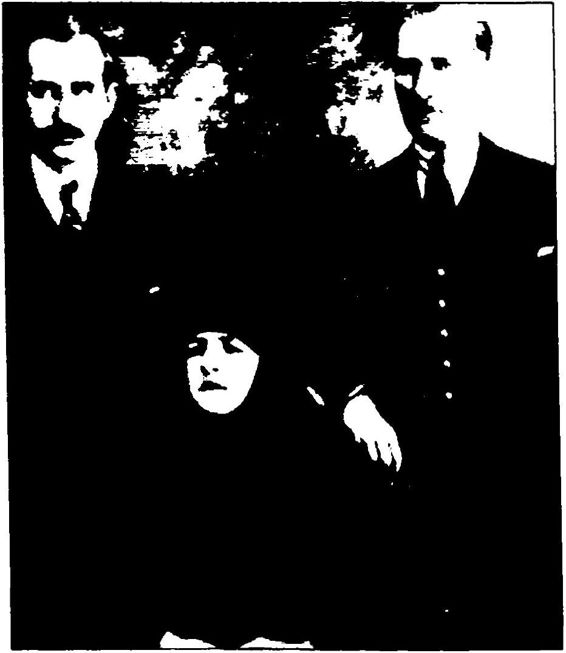
AKP geldikten sonra ilköğretim 8. sınıflarda okutulan TC İnkılâp Tarihi ve Atatürkçülük ders kitabındaki “Atatürk’ün Hayatı” ünitesinde Atatürk’ün evliliğini gösteren fotoğraf Türkiye’de ABD ve AB etkisinde yeni bir tarih yazma işinin ön hazırlıklarını TÜSİAD ve Tarih Vakfı yürütmektedir. Adı geçen kuruluşlar yeni tarih yazımı konusunda atölye çalışmaları yapmakta, seminerler düzenlemektedir. Örneğin Fredrich Ebert Vakfı’nın katkılarıyla Tarih Vakfı tarafından hazırlanan Tarih Öğretiminin Yeniden Yapılandırılması adlı kitap 23 Aralık 2000’de ODTÜ Kongre ve Kültür Merkezi’nde düzenlenen atölye çalışmasından meydana gelmiştir.
Yine Tarih Vakfı, 2005 yılında 20. Yüzyıl Dünya ve Türkiye Tarihi adlı bir kitap hazırlatmıştır. Kitaba göre, “Yaratıcı ve çağdaş bir tarih eğitimi için insanların geçmişlerine sahip çıkmak kadar, geçmişlerine sahip çıkmama hakkı da vardır”, ulus devletin artık modası geçmiştir. Bu nedenle, “tarih eğitiminin de öğrencinin sahip olduğu diğer kimlikleri reddederek ulusal kimliğe kör bir bağnazlıkla sarılmasını amaçlamaktan vazgeçmesi gerekiyor”. Kitaba göre, II. Abdülhamid dönemi bir modernleşme dönemidir! Kurtuluş Savaşı o kadar da önemli bir savaş değildir! Nitekim kitapta Kurtuluş Savaşı’na sadece iki sayfa ayrılmıştır. Kurtuluş Savaşı’nın birçok önemli aşamasından hiç söz edilmeden geçilmiş, bu süreçteki çok önemli savaşlar ise “savaş” veya “zafer” olarak değil, “çarpışma” olarak geçiştirilmiştir. Örneğin, I. İnönü ve II. İnönü Savaş ları/Zaferleri “savaş” ve “zafer” değil sadece “çarpışma” olarak adlandırılmıştır: “TBMM hükümetinin Anadolu’da egemenliği sağladıktan sonra oluşturduğu ordu, İnönü’deki çarpışmalarda başarılı oldu...” Dahası, yüz kilometrelik bir cephede geceli gündüzlü 22 gün devam eden Sakarya Meydan Muharebesi de sıradan, önemsiz bir savaş olarak gösterilmiş ve Yunanlıların yenilmeyip sadece “geri çekildikleri” ifade edilmiştir. Daha da vahimi, kitapta 30 Ağustos 1922’de kazanılan ve Yunan ordusunun 9 Eylül 1922’de İzmir’den denize dökülmesiyle sonuçlanan Büyük Taarruz’dan hiç söz edilmeden bu büyük zafer, “1922 yılında TBMM hükümeti orduları Yunan kuvvetlerine saldırarak kısa sürede bunları Anadolu’dan çıkardı” diye geçiştirilmiştir. Sevr ve Lozan Antlaşmaları ise sadece üç tümce ile anlatılmıştır. Koca kitapta sadece iki sayfacık anlatılan Kurtuluş Savaşı “Kuvâyi Milliye” ve “zafer” sözcükleri hiç kullanılmadan anlatılıp geçilmiştir. Ayrıca bu iki sayfalık Kurtuluş Savaşı anlatımı da yanlışlarla, çarpıtmalarla doludur, örneğin kitaba göre Şeyh Sait Ayaklanması’nda İngiltere’nin hiç rolü yoktur! Atatürk'ün Şapka Kanunu “tutuculara yönelik bir simgesel saldırı"dır!
333 sayfalık bu kitapta liberalizm, kapitalizm, faşizm, nazizm, sosyalizm ve komünizm kavramları birer ideoloji olarak açıklanıp anlatılırken, Kemalizm veya Atatürkçülük kavramları ise yalnızca okuma parçalarında belge olarak geçen üç askeri bildiride yer almıştır. Bunlar: 12 Mart 1971 Muhtırası, 12 Eylül 1980 ve 28 Şubat 1997 MGK bildirileri... Böylece Kemalizmin veya Atatürkçülüğün “antiemperyalist” ve “tam bağımsızlıkçı” bir “çağdaşlaşma” ideolojisi olduğu saklanarak, Kemalizm veya Atatürkçülük sadece “darbe ideolojisi” olarak sunulmuştur. Cumhuriyet’in ilk yıllarındaki tek parti CHP, adı verilmeden faşizm ve nazizmle özdeşleştirilmiştir. Atatürk’ün Tarih ve Dil Tezleri çarpıtılmış, “Türk Tarih Tezi gibi aşırı, hatta ırkçı kurumlar geliştirildi," denilerek düpedüz yalan söylenmiştir. Kitap, Türk Tarih Tezi’yle Türkİslam Sentezi’ni bir tutarak gerçekleri çarpıtmıştır. Kitapta 1923 Devrimi olabildiğince küçümsenirken, 1946’dan sonraki Karşı Devrim olabildiğince yüceltilmiştir. Türkiye’nin 1940’larda, 1950’lerde Truman Doktrini’ne katkıda bulunması, Marshall Yardımı’ndan yararlanması “başarı” olarak değerlendirilirken, 1950’lerdeki karayolu yapımı övülmüş, tarımda modernleşmenin ancak dışa bağımlılıkla gerçekleşeceği belirtilmiştir. 20. yüzyılın en özgün eğitim projelerinden biri olan Köy Enstitülerinden ise tek kelimeyle bile söz edilmemiştir. Kitaba göre Türkiye’de irtica tehlikesi de yoktur!
Bu kitabın hangi düşüncenin ürünü olduğunu çok daha iyi an lamak için Tarih Vakfı Başkanı Orhan Silier’in “Tarih, Kimlik, Avrupalılık” adlı kitabına bakmak gerekir. Bakın neler yazmış Orhan Bey: “Ülkemiz insanları, yaşadıkları köy, kasaba, şehirden gelen bir yerel kimlikleri, konuştukları dilden, ait oldukları inanıştan, etnik kökenlerinden gelen kültürel kimlikleri, yürüttükleri mesleki faaliyetten ve konumlarından gelen sosyal kimlikleri, bu ülkenin yurttaşı olmaktan gelen ulusal kimlikleri, dünya vatandaşı olmaktan gelen insanlıkları ve nihayet ‘bir can’ olmaktan gelen biyolojik kimlikleriyle yaşarlar. Avrupalılık bu kimlikler bütünü içinde ve ancak bunlarla birlikte anlam kazanan bir kimliktir.” Orhan Bey, antik Sümer’den beri var olan ortak insanlık değerlerini “Avrupalılık kimliği” diye bize yutturmaya çalıştıktan sonra dilinin altındaki baklayı da şöyle çıkarmış: “...Önümüzdeki 1015 yılda Türkiye tarihi, sosyolojisi, antropolojisi büyük ölçüde yeniden yazılacak. Türkiye’de bilim, sanat, felsefe çok önemli oranda yeniden yapılanacaktır. Eğer Türkiye Avrupa’yla bütünleşecekse bu büyük proje her alanda yeni paradigmaları, temel yaklaşımları birlikte getirecektir. ”
Orhan Bey yalnız değildir tabii. Bugün Türkiye’de onun gibi düşünen çok sayıda devşirilmiş aydın vardır. Örneğin İlhan Tekeli, “küre selleşmeye” uygun yeni tarih kitapları yazılması gerektiğini şöyle ifade etmiştir:“Küreselleşen, başka bir deyişle ulus devletlerin aşılma sürecine giren dünyanın her yerinde tarih öğretiminin yeniden düzenlenmesi, tarih dersi kitaplarının yeniden yazılması gündeme gelmektedir ya da gelecektir. Ama Türkiye’de günümüzde bu konunun ele alınması, bu genel eğilimin dışında, birçok konuda olduğu gibi bu konuda da bir kriz yaşanmakta olması yüzündendir. Türkiye özelinde bir kriz halin de olmasının hem evrensel hem de Türkiye’ye özgü nedenleri vardır. Evrensel nedenlerin başlıcası belli bir küreselleşmenin yaşanmasıdır. Ulus devletlerden oluşan bu dünyada tarih kitaplarının konularını, yazım biçimlerini büyük ölçüde ulusçu ideolojiler belirliyordu. Oysa ulus devletlerin aşılarak küreselleşmenin gerçekleşmeye başladığı ve barışçı bir dünya düzeni arayışlarının yaygınlaştığı bir dünyada böyle bir tarih yazımı çağdışı hale gelmiştir. Uluslar arasında ayrılıklar inşa etmeye, ‘ötekiler’ oluşturarak çatışmalara gerekçeler bulmaya dönük bir tarih yazımı yerine, uluslararasında köprüler oluşturmaya, dostluk ve yardımlaşmaya kaynaklık edecek bir tarih yazımına olan gereksinme her geçen gün daha çok duyulmaktadır.” İlhan Tekeli burada aslında o klasik “liberal ezberi” tekrarlamıştır. Hiçbir somut veriye dayanmadan, “Ulus devletlerin aşılarak küreselleşmenin gerçekleşmeye başladığı ve barışçı bir dünya düzeni arayışlarının yaygınlaştığı”ndan söz etmiştir. Üstelik ABD emperyalizminin Ortadoğu’yu kana buladığı bir zamanda bunu söylemiştir. Özetle İlhan Tekeli diyor ki: Tarih kitaplarımızı, ABD ve AB gibi kürselleşme aktörlerinin hoşuna gidecek şekilde bağımsızlık savaşlarından, ulus devlet vurgusundan arındırmalı, dostluk, barış, kardeşlikle doldurmalıyız! İyi de tarih, bizim içinde bulunduğumuz duruma, şartlara, ihtiyaçlara göre bugünden bakarak yeniden şekillendirilecek bir şey değildir ki. Emperyalist Batı öyle istiyor diye tarihimizi nasıl altüst ederiz? Nasıl kahramanlarımızı hain, hainlerimizi kahraman ilan ederiz? Nasıl yaşanmış gerçekleri yaşanmamış sayabiliriz? Bu tür sorular karşısında devşirilmiş aydının kafası kilitlenmiş gibidir: O mankurtlaştırılmıştır artık! AB ve ABD ne isterse onu yapmaya şartlanmıştır bir kere. Sürekli “Resmi tarih yalan söylüyor! Resmi tarihle yüzleşelim!” diye söylenmesine karşın, 1949’dan beri yazılıp öğretilen AB ve ABD çıkarlarına uygun “resmi tarihle” yüzleşemezken yine AB ve ABD çıkarlarına uygun yeni bir “resmi tarih yazımı” için çırpındığının farkında değildir!
Son yıllarda TÜSİAD, TESEV, Tarih Vakfı gibi kuruluşların öneri tarih kitapları doğrultusunda MEB, yeni tarih kitapları hazırlatıp müfredata koymuştur. Örneğin AKP döneminde 2005-2006 eğitim öğretim yılında müfredata konan lise tarih ders kitaplarında din/inanç konuları ve tarikatlar “bilimsel” çerçevede değil, tamamen “dinsel” çerçevede anlatılmıştır. “Yeni” diye adlandırılan bu tarih kitapların da tarihe “bilimsel”, “eleştirel” bakış tamamen terk edilerek “dinsel” bakış yerleştirilmek istenmiştir. Bu “yeni” lise tarih kitaplarında tarih, İslam öncesi köklerden soyutlanarak anlatılmaya başlanmıştır. Antik çağlar, eski Ön Asya ve Anadolu tarihi birkaç cümleyle geçiştirilmiş, Türk tarihi neredeyse sadece Osmanlı hanedan tarihine indirgenmiştir.
Asıl büyük operasyon ise “İnkılâp Tarihi” ders kitaplarında yapılmıştır. 2006-2007 MEB lise İnkılâp Tarihi ve Atatürkçülük ders kitabında II. Abdülhamid ve Vahdettin olabildiğince parlatılmış, bunu yapmak için de tarihi gerçekler tersyüz edilmiştir. II. Abdülhamid’in Meşrutiyet’teki, 31 Mart Olayı’ndaki, donanma konusundaki tutumu, padişahın eleştirilmesini önlemek amacıyla, çarpıtılarak verilmiştir. Çok daha vahimi, Atatürk’ün Nutuk’ta “vatan haini”, “soysuzlaşmış yaratık” diye tanımladığı son padişah Vahdettin, bir anda “vatan hainliğinden” “kahramanlığa” terfi ettirilmiştir. Vahdettin-Damat Ferit ilişkisi çarpıtılmış, Vahdettin’in Atatürk’ü Kurtuluş Savaşı’nı başlatması için Samsun’a gönderdiği uydurulmuş, Kurtuluş Savaşı’ndan sonra Vahdettin’in İngiltere’ye sığınmadığı, sadece bir İngiliz gemisiyle Türkiye’den ayrıldığı yalanı söylenmiştir. Kitapta yakın tarih altüst edilmiştir. Örneğin halifeliğin kaldırılmasının laiklikle hiçbir ilgisinin olmadığı, İngiltere, Fransa ve İtalya gibi ülkeler halifelikten korkup Türkiye ile ilişki kurmaktan çekindikleri için halifeliğin kaldırıldığı belirtilmiştir. Görülen o ki, bu yeni İnkılâp Tarihi ve Atatürkçülük kitabının adı dışında hiçbir şeyi yeni değildir. 1950’lerden beri dillendirilen Karşı Devrim yalanları daha da allanıp pullanarak servis edilmiştir. Bu kitabın “inkılâpla” da “Atatürk’le de uzaktan yakından hiçbir ilgisi yoktur. Belli ki, İnkılâp Tarihi ve Atatürkçülük dersini kaldırmayı düşünen ancak kamuoyundan gelen baskılar nedeniyle bunu başaramayanlar, bu sefer daha kötüsünü yaparak bu dersin ders kitaplarının içini olabildiğince boşaltıp çarpıtılmış, kurgulanmış bir tarihle doldurmuşlardır. Böylece İnkılâp Tarihi ve Atatürkçülük dersi, Devrim Tarihi’nin ve Atatürk’ün eleştirildiği, buna karşın II. Abdülhamid’in ve Vahdettin’in yüceltildiği bir ders haline getirilmiştir.
Bir AB projesi olan “Türk-Yunan Sivil Diyaloğu” projesi kapsamında tarih kitaplarından Yunanistan’la ilgili olumsuz yargıların çıkarılması gündeme gelmiştir. Bu doğrultuda artık tarih kitaplarında Kurtuluş Savaşı’nda Yunanlıların Anadolu’yu işgal ettiği, İzmir ve Ege bölgesinde katliam ve tecavüzler gerçekleştirdikleri, Rum çetelelerinin Ege’de ve Karadeniz’de Müslümanları katlettikleri, Kurtuluş Savaşı ile Yunan ordusunun İzmir’den denize döküldüğü gibi tarihsel gerçeklerin yer almaması istenmiştir. Bu çerçevede 28 Kasım 2011’de AKP’li Ordu Milletvekili İhsan Şener çok “ileri” bir adım atıp, “Yunan tarihinde bir Ege savaşı yok. Bunu biliyor musunuz? Yunan tarihinde Ege’de Türklerle bir savaş yok. Biz milli güvenlik akademisinde oralardaki şehitlikleri dolaştık. Bütün şehitlikler temsili...” diyerek Kurtuluş Savaşı gerçeğini bile inkâr etmiştir.
2005 yılında tarih ders kitaplarında yapılan bir değişiklikle ortaöğretim müfredatında sözde Ermeni soykırımına da yer verilmiştir. Daha doğrusu tarih ders kitabında Ermeni olayları konusunda hem Ermeni iddialarına hem de Türk görüşüne yer verilmeye başlanmıştır.
ABD ve AB özellikle AKP iktidarı döneminde Türkiye’ye yöne lik “tarih” dayatmalarını iyice artırmıştır. Sonuçta 2002’den itibaren Türk tarihi, Batı emperyalizmine hizmet edecek şekilde bir kere daha yeniden kurgulanmaya başlanmıştır. Bu süreçte bir taraftan Batı güdümündeki üniversiteler ve sivil toplum örgütlerince yeni tarih yazımı konusunda atölye çalışmaları yapılmış, örnek ders kitapları hazırlanmış, diğer taraftan ise AKP hükümeti MEB eliyle bu yeni tarihi yavaş yavaş ders kitaplarına enjekte etmeye başlamıştır.
Dikkat edilecek olursa Türk tarihini emperyalizmin istekleri doğrultusunda yeniden yazmaya karar verenler “resmi tarihle yüzleşme” adı altında sadece Kurtuluş Savaşı ve Cumhuriyet tarihiyle yüzleşmektedirler. Binlerce yıllık Türk tarihinin sanki sadece 1919-1938 arası “hatalı” yazılmış gibi bir algı yaratılmaktadır. Türkiye’yi yöneten güdümlü iktidarların ve onların görevli aydınlarının BOP çerçevesinde gündeme gelen Yeni Osmanlıcılık akımı doğrultusunda Cumhuriyet öncesindeki Osmanlı tarihiyle ve 1946 sonrasındaki Karşı Devrim tarihiyle yüzleşecek halleri yoktur haliyle! Onların derdi sadece Atatürk’ün önderliğindeki Kurtuluş Savaşı ve Türk Devrimi’dir.
Bu sahte yüzleşme ile amaç, Cumhuriyet tarihini altüst ederek, bu süreçte Atatürk başta olmak üzere emperyalizme ve yerli işbirlikçilerine meydan okuyanları, Türkiye’yi çağdaşlaştıranları “hain”; emperyalizmin gönüllü işbirlikçilerini ve gericileri ise “kahraman” ilan etmektir. Nitekim resmi tarihle yüzleşenlerin yazdıkları emperyalizmin güdümündeki yeni tarihe göre İngiliz işbirlikçisi Vahdettin, gerici-ayrılıkçı Şeyh Said ve Seyit Rıza, devrim karşıtı, kışkırtıcı, vatan haini İskilipli Atıf ve Saidi Nursî gibiler kahraman; emperyalizme meydan okuyan Atatürk, İsmet İnönü, Ali Çetinkaya gibiler ise haindir!
AKP iktidarı döneminde Cumhuriyet tarihi çarpıtmaları şaşırtıcı düzeyde artmıştır. Öyle ki bazı ilköğretim okullarına “Türk büyüğü” diye hain Vahdettin’in resmi asılmıştır. Bir öğrencinin Vahdettin’e “hain” dediği kompozisyonun bir yarışmada ikincilik ödülü alması üzerine jürideki 7 öğretmen hakkında soruşturma açılmıştır. 2013 yılında AKP Genel Başkan Yardımcısı Mehmet Ali Şahin, Milli Eğitim Bakanı Nabi Avcı’dan, tarih kitaplarından Vahdettin’in “hain” olduğu bilgisini çıkarmasını istemiştir.
2011 yılında Türkiye Büyük Millet Meclisi, tarihinde ilk kez bir padişah için Sultan I. Abdülmecid’in ölümünün 150’nci yıldönümü vesilesiyle 17 Kasım’da anma töreni düzenlemek istemiştir. Ancak I. Abdülmecid’in ne doğum günü ne de ölüm günü 17 Kasım’dır. Yılmaz Özdil’in dediği gibi, “17 Kasım'ın Abdülmecit’le falan alakası yoktur. 17 Kasım... Mustafa Kemal için idam fermanı yazan Vahdettin'in Türkiye’den defolup gittiği gündür! Padişah tuğralı davetiyeler milletvekillerine gönderildi. Anma töreni 17 Kasım’da Dolmabahçe Sarayı’nda yapılacak.”
25 Mayıs 2013’te Karabük Üniversitesi tarafından 95 sene önce vefat eden II. Abdülhamid’e “fahri doktora” verilmiştir.